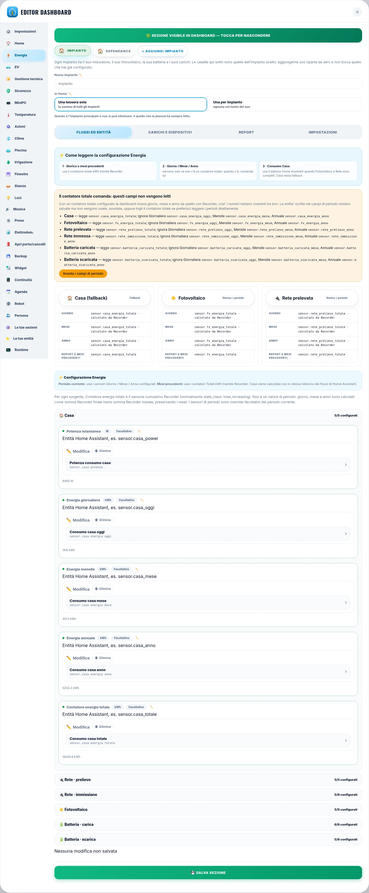
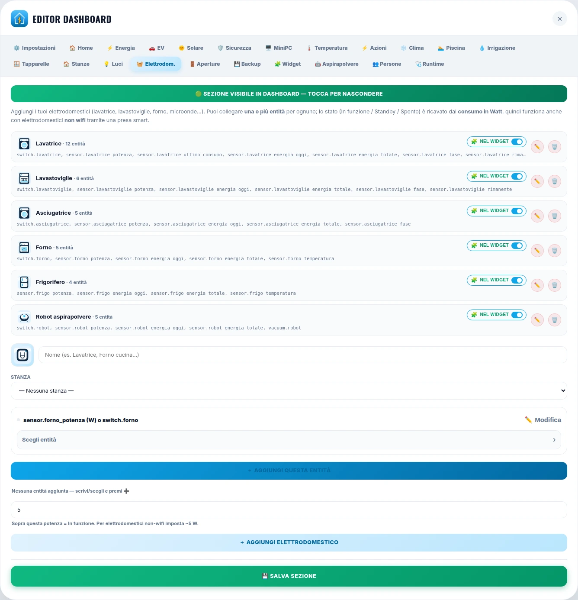

Manuale di configurazione
Come si installa, come si configura e — soprattutto — dove va messa ogni entità: il fotovoltaico, le porte, le luci, la lavatrice, l'auto, la piscina. Scheda per scheda, campo per campo.
Prefazione
DashboardModern nasce da un'idea di Giovanni d'Aniello, e da una constatazione semplice: non c'è una casa uguale a un'altra. C'è chi ha il fotovoltaico e chi no, chi ha due contatori sotto lo stesso tetto, chi ha le tapparelle su due relè e chi ha solo un contatto sulla finestra, chi ha l'auto elettrica e chi il serbatoio da guardare. Una plancia che vada bene per tutti non può essere una plancia uguale per tutti: deve essere una che si adatta.
Home Assistant sa fare quasi tutto, ma chiede di saperlo già. Chi ci arriva la prima volta si trova davanti file YAML da scrivere, card da comporre una per una, e una casa che comincia a essere leggibile solo dopo parecchie serate. È lì che tante persone si fermano — non perché manchi qualcosa, ma perché la distanza fra l'installazione e la prima pagina utile è troppo lunga.
Una plancia che si adatta alla casa,
non il contrario.
Questo progetto accorcia quella distanza. Le entità le hai già: quello che mancava era un posto dove metterle e qualcuno che le disegnasse per quello che sono — un elettrodomestico ha un ciclo, non un acceso e spento; una tapparella sta fuori e la finestra sta dentro; un impianto solare ha tre sonde e ognuna misura una cosa diversa. Tutto si configura a video, in un editor fatto di caselle che dicono cosa vogliono, senza mai aprire un file. E ogni sezione si accende da sola quando riceve la prima entità e resta nascosta quando non ne ha: chi non ha la piscina non vede la piscina, e non deve fare niente perché sia così.
Il risultato è una plancia che sta bene addosso a un monolocale con quattro luci come a una casa con due impianti, tre centrali d'allarme e un armadio di server — senza che nessuno dei due debba imparare il mestiere dell'altro.
Questo manuale è la stessa idea messa su carta: dice dove va ogni cosa, in modo che anche chi comincia adesso possa arrivare in fondo alla configurazione da solo, e chi ha una casa complicata trovi la casella che gli serve senza cercarla.
Prima di tutto
Tre modi di usarlo, a seconda di dove sei: che tu debba installare la plancia da zero, configurarla la prima volta, o cercare dove diavolo va messo quel sensore.
| Parte 1 | Prima di cominciare. Requisiti, installazione, opzioni dell'integrazione, com'è fatto l'editor. |
| Parte 2 | Il primo avvio. L'autorilevamento, l'ordine consigliato, il percorso rapido. |
| Parte 3 | Dove va ogni entità. Le tabelle di consultazione: dal dominio alla casella. |
| Parte 4 | Le schede una per una. Il grosso del manuale: ogni campo, cosa accetta, cosa succede se lo lasci vuoto. |
| Parte 5 | Come nascono i numeri. Il bilancio dell'energia, lo storico, i costi. |
| Parte 6 | Manutenzione. Backup, aggiornamenti, diagnostica, problemi tipici. |
sensor.casa_potenza — un identificativo di entità Home Assistant, scritto come lo scrive
Home Assistant: dominio.nome. Negli esempi i nomi sono inventati: usa i tuoi.
obbligatorio il campo serve, senza quello la scheda non funziona. facoltativo si può lasciare vuoto: la plancia si arrangia o nasconde quel pezzo. consigliato non obbligatorio, ma senza si perde qualcosa di importante.
Le unità attese sono segnate così: W potenza istantanea, kWh energia, % percentuale.
Le schermate vengono da una casa demo inventata: nessun dato, nessuna telecamera e nessun consumo appartiene a un impianto reale. Servono a riconoscere il posto, non a copiare i valori.
DashboardModern non crea entità. Legge quelle che Home Assistant ha già e le presenta. Se un valore non c'è in Home Assistant, non c'è nemmeno qui: prima si fa funzionare l'integrazione del dispositivo, poi si collega la sua entità alla casella giusta della plancia.
Indice
Se stai configurando per la prima volta, non leggere la Parte 4 dall'inizio alla fine: è un riferimento, non un romanzo. Fai la Parte 2 — autorilevamento e i dieci passi — e apri la Parte 4 solo sulla scheda che stai compilando in quel momento.
Che cos'è questa plancia, cosa serve per installarla, dove finisce quello che configuri e come è fatta la finestra in cui si configura tutto.
Capitolo 1.1
DashboardModern v2 è una custom integration che aggiunge alla barra laterale di Home Assistant una plancia completa, già pronta, che si configura interamente a video.
Le entità restano entità di Home Assistant. La plancia si occupa di presentazione, aggregazioni, storico e comandi: non costruisci decine di card Lovelace, non scrivi YAML, non incolli token.
configuration.yaml, niente token: il pannello
riceve la sessione già autenticata di Home Assistant.Non crea entità. Usa quelle che hai già. Se un dato non esiste in Home Assistant, la plancia
non lo inventa: mostra —. |
| Non sostituisce le integrazioni. L'auto, la wallbox, l'inverter, la lavatrice connessa restano le loro: la plancia ne presenta le entità. |
| Non chiama nessun servizio in rete, tranne il controllo delle nuove versioni — che si può spegnere — e i riquadri del radar meteo, se scegli un fornitore di mappe. |
| Parola | Che cosa vuol dire qui dentro |
|---|---|
| Plancia | Il pannello di DashboardModern nella barra laterale, con tutte le sue sezioni. |
| Sezione | Una pagina della plancia — Energia, Luci, Sicurezza — con la sua voce nella barra di navigazione. |
| Editor (o Config) | La finestra di configurazione, che si apre dalla plancia. Trentaquattro schede in sette famiglie. |
| Scheda | Una linguetta dell'editor: una scheda configura una sezione, o una parte della plancia. |
| Entità | Un oggetto di Home Assistant, scritto dominio.nome: light.salone, sensor.fv_potenza. |
| Stanza | Il registro condiviso della plancia. Non è l'area di Home Assistant, ma l'autorilevamento la ricava da lì. |
| Impianto | Nell'Energia: un contatore con i suoi flussi e i suoi carichi. Se ne può avere più di uno. |
| Carico | Uno dei cerchi sotto la Casa nel flusso energetico: wallbox, clima, cucina, lavanderia. |
Capitolo 1.2
Poco, e quasi tutto lo hai già. Ma due cose — il Recorder e i contatori totali — decidono quanto sarà utile l'Energia, ed è meglio saperlo prima che dopo.
| Requisito | Valore |
|---|---|
| Home Assistant | 2025.1.0 o successivo |
| Installazione | Da HACS come archivio personalizzato (tipo: Integrazione), oppure copiando a mano la cartella dell'integrazione |
| Consigliato | recorder attivo: serve per storico, report e analisi dell'Energia |
| Browser | qualsiasi browser moderno; app Companion iOS e Android supportate |
| Entità | le tue: la plancia non crea entità, usa quelle già presenti |
| Rete | la plancia funziona senza internet. L'unica uscita è il controllo delle nuove versioni, ogni mezz'ora, e si può spegnere dalle opzioni |
alarm_control_panel.*; se hai telecamere, le
camera.*.Per lo storico dell'Energia — mesi precedenti, grafici, confronti — serve un
contatore totale in kWh con device_class: energy e
state_class: total oppure total_increasing.
Un sensore «del mese» non lo sostituisce: sa dire quanto è andato questo mese, non quanto era andato a marzo. Se il tuo inverter non espone un totale, si crea in Home Assistant con un Riepilogo (integration/utility meter) e si collega qui.
L'altro è la potenza istantanea in W: è quella che fa muovere il flusso live. Senza, il diagramma resta fermo anche se i kWh crescono.
Se hai un solo sensore con il segno — positivo quando prelevi, negativo quando immetti — va benissimo: la plancia lo separa da sola. Se invece hai due sensori sempre positivi, ci sono due caselle apposta (§ 4.7).
Capitolo 1.3
Due strade per installare, una sola per aggiornare — quella che ti avvisa entro mezz'ora.
https://github.com/danigio15/dashboardmodern-v2custom_components, nella
configurazione di Home Assistant.L'integrazione se ne accorge da sola, entro mezz'ora dalla pubblicazione, e lo dice in Impostazioni → Aggiornamenti con le note di versione.
Serve perché HACS, da solo, ci mette molto di più: un archivio personalizzato lo ricontrolla ogni quarantotto ore, e non lo guarda nemmeno al riavvio.
Il tasto «Installa» in Impostazioni → Aggiornamenti scarica esattamente la stessa versione che installerebbe HACS, la controlla prima che un solo file si muova, e a fine scambio chiede il riavvio che completa l'aggiornamento. HACS si riallinea da solo al suo prossimo controllo.
La strada di HACS resta: HACS → DashboardModern v2 → ⋮ → «Aggiorna informazioni», poi «Aggiorna» e riavvio quando compare In attesa di riavvio.
Quando aggiorni, il browser scarica da solo la versione nuova: non serve svuotare la cache né forzare il ricaricamento. Serve comunque:
Su una rete senza uscita si spegne il controllo da Configura → «Controlla le nuove versioni»: spento, l'integrazione non contatta più nessuno.
Capitolo 1.4
Sono le poche scelte che stanno fuori dalla plancia, in Home Assistant: Impostazioni → Dispositivi e servizi → Dashboard Modern V2 → Configura.
| Opzione | Cosa fa |
|---|---|
| Nome | Titolo del pannello nella barra laterale di Home Assistant. |
| Icona | L'icona del pannello, accanto al nome. |
| Utenti abilitati | Limita la visibilità della plancia ad alcuni account Home Assistant. Vuoto = tutti. |
| Posizione nella barra | L'ordine rispetto alle altre voci della barra laterale. |
| Controlla le nuove versioni | L'unica uscita verso internet: un controllo ogni mezz'ora. Spento, non contatta più nessuno. |
| Chiave della console assistenza | Serve solo a chi mantiene la plancia, per leggere le conversazioni della chat di assistenza. Chi la installa in casa propria la lascia vuota: la chat funziona lo stesso. |
Ogni plancia è una config entry: puoi averne più di una, con configurazioni indipendenti — per esempio una completa per casa e una ridotta per il tablet in ingresso. Alla creazione scegli il nome, che diventa il titolo nella barra laterale.
La configurazione della plancia sta dentro Home Assistant, in un archivio interno dell'integrazione, non nel browser. Di conseguenza:
| È la stessa ovunque. Aprendo la plancia da un altro browser, da un altro account Home Assistant o dall'app Companion la ritrovi già configurata. |
Sopravvive agli aggiornamenti, al riavvio, alla pulizia della cache del browser e anche alla
rimozione e riaggiunta dell'integrazione: la chiave dell'archivio non contiene l'entry_id. |
| Non si svuota per sbaglio. Chi non riesce a leggere la configurazione non ne scrive una vuota al suo posto, e l'archivio rifiuta un salvataggio che sostituirebbe una plancia configurata con una vuota. |
| I conflitti si risolvono sulla revisione dell'archivio, non sull'orologio del dispositivo: un telefono con l'ora avanti non sovrascrive modifiche più recenti fatte altrove. |
| Conserva le ultime cinque revisioni configurate: una plancia svuotata da una versione precedente viene ripristinata da sola. |
| Restano sul singolo dispositivo solo le preferenze che hanno senso solo lì: tema, stato del kiosk e i dati di connessione. |
La scheda 💾 Backup dell'editor scarica l'intera configurazione come file e la rimette da un file: serve per spostare una plancia su un'altra installazione, per tenersi una copia prima di una modifica grossa, o per tornare indietro dopo un ripensamento. → § 6.1
Capitolo 1.6
Si apre dalla plancia — Editor Dashboard — ed è un'unica finestra con trentaquattro schede, una per area, raccolte in sette famiglie. Tutto quello che descrive questo manuale si fa da qui: nessun YAML.
| Famiglia | Schede |
|---|---|
| ⚙️ Plancia | Impostazioni · Home · Widget · Le tue entità · Le tue sezioni · Backup · Runtime |
| ⚡ Energia | Energia · EV · UPS |
| 🌡️ Clima e acqua | Clima · Temperatura · Gestione termica · Piscina · Irrigazione |
| 🛋️ Casa | Stanze · Luci · Prese · Finestre · Elettrodomestici · Musica · Robot · Animali · Persone · Azioni · Batterie |
| 🛡️ Sicurezza | Sicurezza · Varchi · Presenza · Apri porte/cancelli |
| 🔔 Avvisi | Avvisi · Allerte · Agenda · Rifiuti |
| 🖥️ Macchine e rete | MiniPC |
Le famiglie sono un indice, non un filtro: toccarne una porta alla sua prima scheda, ma nessuna linguetta sparisce. Restano tutte in fila, con l'insegna della famiglia davanti a ogni gruppo.
Ogni pannello ha il proprio pulsante di salvataggio — SALVA MODIFICHE, Salva sezione, Salva energia, Salva carichi — e va premuto prima di cambiare scheda o chiudere l'editor. Cambiare linguetta senza salvare butta via quello che hai scritto.

Dice se la sezione si vede nella barra. Una scelta fatta qui a mano viene ricordata, e l'automatismo non la ribalta più. → § 1.8
In fondo al pannello. Alcune schede ne hanno più d'uno, uno per blocco: l'Energia salva i flussi e i carichi separatamente.
Uguale dappertutto: nome, identificativo, ricerca, matita, cestino, stanza e widget. → § 1.7
Capitolo 1.7
È la riga che incontrerai qualche centinaio di volte: la stessa in tutte le maschere. Imparata una, imparate tutte.
sensor.cucina_ trovano le stesse cose.Apre la casella di testo: si scrive l'identificativo a mano, dominio.nome. Serve per un'entità che non esiste ancora — un template che stai per creare — o per incollare un id preso da altrove.
Svuota la riga. Svuotare non è scrivere zero: una casella vuota fa sparire quel pezzo della card, e i
conti si arrangiano senza. Un campo che punta a un'entità inesistente, invece, mostra —.
Accanto a ogni riga. Serve per le entità che la stanza non ce l'hanno «per mestiere» — una sonda, un sensore di allagamento, la pompa della piscina: da lì entrano nella pagina Stanze e nei conteggi di quella stanza.
Dentro ci finisce l'id della stanza, non il suo nome: rinominare «Cameretta» in «Studio» non stacca niente.
Sempre accanto alla riga: dice se quell'entità compare nella tessera della Home. È la risposta a «voglio il sensore configurato, ma non voglio vederlo in prima pagina».
Non riempire ogni casella per il gusto di riempirla. Quasi tutte sono facoltative: la plancia disegna quello che c'è e tace su quello che manca. Una casella vuota è una scelta legittima, una casella sbagliata è un numero che racconta una bugia.
Capitolo 1.8
Nessuna sezione è obbligatoria e nessuna va nascosta a mano: una sezione appare quando riceve dati e sparisce quando non ne ha. Chi non ha la piscina non vede la piscina.
Nell'ordine: 1) hai premuto salva in quella scheda? 2) c'è almeno un'entità configurata? 3) il pulsante verde in testa alla scheda è acceso? 4) guarda la Diagnosi navbar in ⚙️ Impostazioni, che dice per ogni sezione perché si vede o non si vede.
Si dispone in ⚙️ Impostazioni → Ordine navbar. Desktop e mobile possono avere ordini diversi: sul telefono in prima fila vanno le tre o quattro sezioni che apri davvero ogni giorno.
Ogni sezione ha la sua icona di serie — Home la casa, Stanze la porta — e si possono cambiare: una sezione rinominata resta la stessa sezione, con la stessa configurazione.
La modalità della barra — a scomparsa o ferma — è una scelta della plancia e viaggia fra i dispositivi: chi la mette ferma sul telefono se la ritrova ferma anche sul computer.
| Home | C'è sempre: è la pagina di apertura. |
| Stanze | Compare appena esiste una stanza con qualcosa dentro. |
| Le tue sezioni | Ognuna ha il suo interruttore «mostrala nella barra». |
| Segnalazioni | Si raggiunge dalla plancia, non è una sezione da configurare. |
Il modo più rapido per passare da una plancia vuota a una casa che si riconosce: prima la proposta automatica, poi dieci passi in ordine, e mezz'ora ben spesa.
Capitolo 2.1
Un pulsante legge tutte le entità di Home Assistant e propone collegamenti, luci, stanze, unità clima, telecamere e gruppi di avvisi. È il modo più veloce per partire; poi si rifinisce a mano, scheda per scheda.
I valori vengono scritti senza mai sovrascrivere quello che hai impostato tu, e le categorie già configurate non vengono nemmeno guardate. Puoi rilanciarlo dopo aver aggiunto dispositivi nuovi: riempirà solo i buchi.
kWh, W, %, °C, bar, Mbit/s),
la device class che quell'unità implica, il dominio suggerito da una parola iniziale
(Script…, Interruttore…, Valvola…, Meteo…) e il periodo
(oggi, mese, anno).L'autorilevamento legge i registri di Home Assistant — piani, aree, dispositivi — e da lì propone le stanze e a chi appartiene ogni entità. Sistemare le aree prima di premere il pulsante è il singolo gesto che fa risparmiare più tempo.
| Categoria | Che cosa cerca | Dove finisce |
|---|---|---|
| 🔗 Collegamenti | Le caselle con un ruolo preciso: energia, server, boiler, sicurezza, auto. | Le schede corrispondenti |
| 💡 Luci | light.*, e gli interruttori che si chiamano come una luce. | 💡 Luci |
| 🌡️ Stanze | Le aree di Home Assistant, con temperatura e umidità di ciascuna. | 🛋️ Stanze · 🌡️ Temperatura |
| ❄️ Unità clima | climate.*, con la stanza dalla sua area. | ❄️ Clima |
| 📹 Telecamere | camera.*. | 🛡️ Sicurezza |
| 🔔 Gruppi avvisi | I binary_sensor.* di fumo, allagamento e batteria scarica. | 🔔 Avvisi |
Capitolo 2.2
Vale sia per chi parte da zero sia per chi rifinisce dopo l'autorilevamento. L'ordine non è un capriccio: ogni passo usa quello che ha fatto il precedente.
Configurare le luci prima delle stanze: ogni luce chiederà una stanza che non esiste ancora, e finirai a rifare il giro con la tendina. Cinque minuti di stanze ne fanno risparmiare trenta.
Salva a ogni passo e guarda la plancia: una sezione che si accende nella barra è la conferma che quel passo è andato a buon fine. Se non si accende, § 1.8.
Capitolo 2.3
Il percorso più corto che porta a una plancia già utile: sei schede, non trentaquattro. Tutto il resto si aggiunge quando serve, e non serve mai tutto insieme.
🛋️ Stanze → aggiungi una riga per ambiente. Nome, icona, piano. Bastano quelle che esistono davvero: un corridoio senza niente dentro non serve a nessuno.
💡 Luci → aggiungi le entità light.* (o gli switch.* che accendono una lampada),
ognuna con la sua stanza. La sezione Luci compare nella barra, e la pagina Stanze si popola da sola.
❄️ Clima → le entità climate.*, con la stanza e la famiglia: Freddo, Caldo,
o entrambe per una pompa di calore.
🌡️ Temperatura → per ogni stanza, il sensore di temperatura e quello di umidità. Da qui nascono il giudizio di comfort e il grafico di confronto fra stanze.
⚡ Energia → Flussi ed entità. Il minimo che accende il flusso live:
| Fotovoltaico | sensor in W W |
| Rete | sensor in W, con segno o due sensori |
| Casa | può restare vuoto: si ricava dal bilancio |
| Contatori totali | i kWh cumulativi, per lo storico |
👥 Persone → il pulsante importa propone ogni person.* che la plancia non conosce
ancora, con nome e foto. I sensori del telefono si trovano da soli.
Apri la Home. Se vedi le persone, il meteo, le tessere delle sezioni configurate e il flusso dell'energia che si muove, la plancia è viva. Da qui in poi si aggiunge una scheda alla volta, quando serve — e ogni scheda ha il suo capitolo nella Parte 4.
| Tentazione | Perché rimandarla |
|---|---|
| Riempire tutte le caselle dell'Energia | Giorno, mese e anno sono facoltativi: con il contatore totale la plancia li calcola da sé. Prima fai funzionare il flusso, poi affini. |
| Configurare venti elettrodomestici | Comincia da quello che guardi davvero — la lavatrice — e impara le soglie su quello. |
| Personalizzare icone e ordine | Si fa alla fine: l'ordine di sezioni che ancora non esistono cambierà comunque. |
| Creare sezioni proprie | Prima guarda se una scheda pronta copre già quel caso: sono trentaquattro. |
Il capitolo di consultazione. Hai un'entità in mano e non sai in quale scheda finisce? Parti da qui: prima il dominio, poi la casella. E se invece sai cosa vuoi vedere, c'è anche la strada al contrario.
Capitolo 3.1
Ogni entità di Home Assistant si chiama dominio.nome. Il dominio dice quasi sempre dove va; quando non basta, decide l'unità di misura.
| Dominio | Scheda dell'editor | Casella e note |
|---|---|---|
| light. | 💡 Luci | Entità luce. La stanza si chiede subito, all'aggiunta. Anche in ⚡ Azioni rapide. |
| switch. | 💡 Luci · 🔌 Prese · 🏊 Piscina · 💧 Irrigazione · 🌞 Gestione termica · 🧺 Elettrodomestici | Se accende una lampada va in Luci; se è la TV o il modem va in Prese; se è una pompa o una resistenza va nella scheda dell'impianto. |
| input_boolean. fan. group. | 💡 Luci | La scheda Luci accetta anche questi: un gruppo di luci resta una card sola. |
| cover. | 🪟 Finestre · 🚪 Apri porte/cancelli | Tapparella, tenda o tenda da sole in Finestre; garage e cancelli in Apri porte/cancelli. |
| climate. | ❄️ Clima | Unità clima, con stanza e famiglia (Freddo, Caldo, o entrambe). |
| sensor. W | ⚡ Energia · Carichi · 🧺 Elettrodomestici · 🚗 EV · 🔌 UPS · 🖥️ MiniPC | Potenza istantanea. Fa muovere il flusso live e decide lo stato «in funzione» di un apparecchio. |
| sensor. kWh | ⚡ Energia · Carichi · Report · 🧺 Elettrodomestici | Energia. Il contatore totale (state_class: total o total_increasing) è quello che serve allo storico; giorno, mese e anno sono facoltativi. |
| sensor. °C | 🌡️ Temperatura · 🌞 Gestione termica · 🏊 Piscina · 🚗 EV · 🖥️ MiniPC · ⚡ Energia | Ambiente in Temperatura; sonde d'impianto in Gestione termica; CPU in MiniPC. |
| sensor. % | 🌡️ Temperatura · 🔌 UPS · 🚗 EV · 🏊 Piscina · 💧 Irrigazione · 🔋 Batterie | Umidità, stato di carica, carico dell'UPS, umidità del terreno, carica di una pila. |
| binary_sensor. | 🪟 Finestre · 🚪 Varchi · 🏃 Presenza · 🔔 Avvisi · 🖥️ MiniPC · 🚗 EV | Contatto dell'infisso, porta o finestra, movimento, fumo, allagamento, batteria scarica, Internet, cavo collegato. |
I sensor.* sono la metà delle entità di una casa, e il dominio non dice niente:
quello che conta è l'unità di misura e la device class. La ricerca della plancia lo sa —
nella casella della potenza propone per prime le entità in W — ma la scelta resta tua, e il modo più
sicuro per non sbagliare è guardare l'unità scritta accanto al nome della casella.
| Dominio | Scheda dell'editor | Casella e note |
|---|---|---|
| camera. | 🛡️ Sicurezza · 🤖 Robot | Telecamere con nome e stanza; la mappa di un robot è spesso una camera.*. |
| media_player. | 🔊 Musica · ⚡ Azioni rapide | Lettori con nome e icona. Fra le azioni, il tasto prende la copertina come sfondo. |
| vacuum. lawn_mower. | 🤖 Robot | Entità del robot, con stanza e, se c'è, entità della mappa. |
| lock. | 🚪 Apri porte/cancelli | Serrature: si sceglie se il tocco apre, sblocca soltanto, o mostra due tasti. |
| alarm_control_panel. | 🛡️ Sicurezza · 🏠 Home | Le centrali, anche più di una. La Home ne mostra una. |
| person. device_tracker. | 👥 Persone | Chi abita la casa. device_tracker.* per chi non ha creato le persone in Home Assistant. |
| calendar. | 📅 Agenda · ♻️ Rifiuti | Calendari con nome e colore; per i rifiuti, il calendario del ritiro. |
| todo. | 📅 Agenda · 🧩 Widget | Le liste da spuntare, in pagina e come tessera in Home. |
| weather. | 🏠 Home · 💧 Irrigazione | La previsione in fascia; per l'irrigazione, il blocco pioggia. |
| water_heater. | 🌞 Gestione termica | Lo scaldabagno: il tasto «Rileva da Home Assistant» lo compila da solo. |
| script. scene. automation. button. | ⚡ Azioni rapide · 🤖 Robot · 🧺 Elettrodomestici | Comandi: i tasti della Home, i programmi rapidi della lavatrice, i comandi in più di un robot. |
| number. select. input_number. | 🚗 EV · 🧺 Elettrodomestici | Target di carica, console modalità, regolazioni: compaiono con il loro comando vero. |
| valve. | 💧 Irrigazione · 🌞 Gestione termica | Elettrovalvole di zona e valvola di sicurezza dell'impianto solare. |
| qualunque | ⭐ Le tue entità · ⭐ Le tue sezioni | Quando nessuna casella pronta ha senso: si sceglie l'entità, la pagina, il nome e l'icona. |
Un switch. può essere una lampada, un modem o la pompa della piscina: il dominio non lo dice.
Lo dice cosa fa, e sei tu a saperlo. Le tabelle di questo capitolo elencano i posti possibili;
la scelta fra quelli è sempre una domanda sola: dove mi aspetto di trovarlo quando lo cerco?
Si può, e a volte conviene: la wallbox sta nella scheda EV e come carico nel flusso dell'Energia; una telecamera sta in Sicurezza e in un widget della Home. Non si duplica niente — sono due letture della stessa entità.
Capitolo 3.2
La strada al contrario: parti da quello che vuoi sulla plancia e scopri quale entità serve e dove va scritta.
| Voglio vedere… | Mi serve | Dove si scrive |
|---|---|---|
| Il flusso dell'energia che si muove | Potenza W di fotovoltaico e rete | ⚡ Energia → Flussi ed entità → Potenza istantanea |
| Quanto ho prodotto oggi / questo mese | Contatore totale kWh del fotovoltaico | ⚡ Energia → Contatore energia totale |
| Il confronto con i mesi scorsi | Lo stesso contatore totale, con Recorder attivo | ⚡ Energia → Contatore energia totale (§ 5.2) |
| Quanto costa la lavatrice | Energia kWh dell'apparecchio + costo €/kWh | 🧺 Elettrodomestici + ⚡ Energia → Impostazioni |
| Un cerchio «Wallbox» sotto la Casa | Un carico con potenza o dispositivi assegnati | ⚡ Energia → Carichi e dispositivi |
| Se una finestra è aperta | binary_sensor di contatto | 🪟 Finestre → Sensore apertura infisso |
| Quante porte sono aperte, in Home | Gli stessi contatti, riconosciuti come varchi | 🚪 Varchi (correzioni) + 🧩 Widget |
| Aprire il cancello dalla Home | cover, lock, switch o script | 🚪 Apri porte/cancelli, o ⚡ Azioni rapide |
| Chi è in casa e chi sta rientrando | person.* (e i sensori del telefono) | 👥 Persone → importa |
| La temperatura stanza per stanza | sensor °C e % per stanza | 🌡️ Temperatura |
| La tapparella che scende sulla card | cover.* (o due relè separati) | 🪟 Finestre → Entità tapparella |
| Se è caduta la corrente | Lo stato dell'UPS (NUT: OL, OB, LB) | 🔌 UPS → Stato |
| Le allerte meteo e i terremoti | I sensori delle integrazioni che li portano | ⚠️ Allerte |
| Voglio vedere… | Mi serve | Dove si scrive |
|---|---|---|
| Cosa metto fuori stasera | Un sensore o un calendar.* per materiale | ♻️ Rifiuti |
| La telecamera in miniatura, dal vivo | camera.* (meglio se con flusso WebRTC/HLS) | 🛡️ Sicurezza → Telecamere |
| Lo stato di carica dell'auto | I sensori dell'integrazione del veicolo | 🚗 EV → profilo veicolo |
| Il livello del serbatoio (auto a benzina) | Sensore carburante + tendina Motore: termica | 🚗 EV → profilo veicolo |
| Se il pellet o la caldaia stanno lavorando | Sonde di mandata, ritorno, pressione | 🌞 Gestione termica → Caldaia |
| Quanto è bagnato il terreno | sensor % di umidità del suolo | 💧 Irrigazione → zona |
| Le VM di Proxmox su o giù | Le entità dell'integrazione, spuntando l'integrazione | 🖥️ MiniPC → Macchine e rete |
| Un acquario, una serra, un impianto strano | Le entità che ha, quali che siano | ⭐ Le tue sezioni |
| Un sensore in più su una pagina che c'è già | Quell'entità e basta | ⭐ Le tue entità |
1. Che cosa voglio leggere sulla plancia?
2. Quale entità di Home Assistant lo sa già? Se nessuna, il lavoro è di là — un'integrazione,
un template, un utility meter.
3. Quale casella di quale scheda chiede proprio quella cosa? Se non esiste,
c'è ⭐ Le tue entità.
Capita soprattutto con l'energia: l'inverter espone i watt ma non i kWh totali, oppure il contatore dà
solo il valore del giorno. Si risolve in Home Assistant, non qui: Riepilogo
(utility_meter) o Integrazione Riemann creano il contatore che manca, e poi
si collega alla casella come qualunque altro sensore.
Nove volte su dieci la risposta è una di queste tre: la casella è vuota (la card mostra
—), non hai premuto salva in quel pannello, oppure quell'entità non esiste
con quell'identificativo. La quarta è che la sezione è spenta nella barra (§ 1.8).
Capitolo 3.3
Sette comportamenti che si ripetono in tutte le schede. Impararli qui evita di ritrovarseli spiegati trenta volte nella Parte 4.
Luci, clima, tapparelle, elettrodomestici, telecamere, carichi, robot e zone d'irrigazione la stanza ce l'hanno perché la loro scheda la chiede. Tutto il resto — una sonda, un sensore di allagamento, la pompa della piscina — la riceve dalla tendina accanto alla riga in cui l'entità è già scritta, in qualunque scheda si trovi.
Accanto a ogni entità: dice se quell'entità compare nella tessera della Home. Configurare non è mostrare: si può avere un sensore collegato e tenerlo fuori dalla prima pagina.
La presa del frigo, quella del modem: l'interruttore di sola lettura toglie il comando e lascia lo stato. È una decisione della casa, non del telefono da cui la si è presa: vale su ogni dispositivo.
Un contatto che sta a on quando l'infisso è chiuso si dichiara con l'apposito
interruttore: senza, la plancia direbbe «aperta» su una finestra chiusa. Vale anche per l'UPS
(«il sensore dice il contrario») e per il verso della batteria.
Quasi ogni riga ha un nome facoltativo — se lo lasci vuoto vale quello di Home Assistant — un'icona dal catalogo disegnato della plancia (non un'emoji di sistema, che cambia faccia da un telefono all'altro) e una maniglia per riordinare.
Impianti, auto, stanze, carichi: ognuno ha un id che nasce una volta e non cambia mai. Rinominare «Casa Giovanni» in «Casa» non sposta niente e non fa perdere né foto né storico.
Un'entità mancante, unavailable, unknown o non mappata non diventa zero:
mostra —. È una scelta di progetto, così un grafico non racconta un consumo che non c'è.
Se una card mostra —, non è rotta: le manca la casella. Se mostra 0, il sensore c'è
e dice zero. Sono due diagnosi diverse, e la plancia le tiene distinte apposta.
Un'entità qualunque, aggiunta in fondo a una pagina che esiste già: si sceglie l'entità, in quale scheda comparire, il nome e l'icona. Serve quando una scheda fatta di caselle con un ruolo preciso — l'Energia ha una rete e un fotovoltaico — non ha posto per un sensore in più.
Una pagina tutta tua: titolo, icona, «mostrala nella barra», e dentro le entità che vuoi, ognuna con nome e icona. Serve quando in casa c'è qualcosa che la plancia non disegna ancora — un acquario, una serra, un impianto che nessuna scheda prevede.
Il riferimento. Per ogni scheda dell'editor: a cosa serve, quali caselle ha, che cosa accetta ognuna, che cosa succede se la lasci vuota e gli errori che capita di fare.
Parte 4
Sette famiglie. Sono un indice, non un filtro: toccarne una porta alla sua prima scheda, ma nella fila restano tutte, con l'insegna della famiglia davanti a ogni gruppo.
Stesso ordine ogni volta: a cosa serve la sezione, la tabella delle caselle — con l'unità attesa e se sono obbligatorie — e in fondo i consigli e gli errori tipici.
Scheda ⚙️ Impostazioni · famiglia Plancia
La scheda della plancia in quanto plancia: come si chiama, che lingua parla, in che ordine sta la barra, e i due pulsanti che si usano una volta sola — l'autorilevamento e il reset.
| Blocco | Cosa contiene |
|---|---|
| Generali | Nome della plancia e utente amministratore. |
| Lingua | La lingua della plancia. È una scelta della plancia, non del dispositivo: impostata sul computer, vale anche sul telefono. |
| Assist | Quale assistente usare (vuoto = quello di serie), se leggere la risposta ad alta voce, e se il tasto si vede. |
| Auto elettriche | I profili veicolo salvati, con marchio, modello e foto. Si compilano dalla scheda 🚗 EV (§ 4.10). |
| Ordine navbar | Disponi le sezioni della barra come preferisci. Desktop e mobile possono differire. |
| Autorilevamento | Il pulsante 🪄 Avvia autorilevamento → § 2.1. |
| Diagnosi navbar | Lo stato di visibilità di ogni sezione, con il motivo. È la prima cosa da guardare quando una scheda non appare. |
| Reset totale | Azzera la configurazione della plancia. |
Il Reset totale non chiede scusa. Passa dalla scheda 💾 Backup e scarica il file: ci vogliono dieci secondi e ti riporta esattamente dov'eri. → § 4.5
Non si decide qui, ma dal pulsante verde in testa a ogni scheda. Qui si legge lo stato di tutte insieme, che è utile quando una sezione non compare e non si capisce perché. → § 1.8
| Assistente | Vuoto = quello predefinito di Home Assistant. Si sceglie solo se ne hai più d'uno. |
| Voce | Se acceso, la risposta viene anche letta ad alta voce. |
| Il tasto | Si può nascondere: chi non usa Assist non se lo trova fra i piedi. |
Sono preferenze della casa, non del vetro: chi accende Assist dal computer se lo ritrova sul telefono.
Scheda 🏠 Home · famiglia Plancia
Quello che la pagina di apertura legge per conto suo, prima delle tessere: il meteo in fascia, la centrale d'allarme, il radar della pioggia e l'ordine dei blocchi.
| Campo | Accetta | A cosa serve |
|---|---|---|
| Meteo consigliato | weather. | La previsione nella fascia in alto: temperatura, condizione, umidità, vento. |
| Stazione meteo · temperatura esterna | sensor °C | Se la colleghi, in fascia va il tuo sensore invece della previsione. |
| Stazione meteo · umidità | sensor % | Idem, per l'umidità esterna. |
| Stazione meteo · percepita | sensor °C | La temperatura percepita, quando la tua stazione la calcola. |
| Stazione meteo · velocità vento | sensor | Il vento in fascia, con la tua unità. |
| Stazione meteo · direzione vento | sensor | In gradi o a lettere: la plancia legge tutte e due. |
| Allarme | alarm_control_panel. | La centrale che la Home mostra e comanda. Le altre stanno in 🛡️ Sicurezza. |
| Radar meteo · luogo | Casa, una zona o le coordinate | Il centro della mappa della pioggia. |
| Radar meteo · servizio | RainViewer · OSM · tuo · Nessuno | Da chi arrivano le tessere: di serie RainViewer con CARTO come fondo, oppure OpenStreetMap, o un indirizzo tuo con {z}/{x}/{y}. Nessuno = la plancia non bussa a nessun servizio. |
| Ordine dei blocchi | — | In che ordine stanno persone, widget, azioni e dispositivi nella pagina. |
| Flusso energia in Home | sì / no | Se il diagramma dell'energia compare anche nella pagina di apertura. |
| La riga sotto il meteo | — | Quali pastiglie si vedono sotto la fascia, e da quale contatto arriva la posta. |
Interruttore antifurto e Script apertura cancello sono stati tolti da questa scheda: chiedevano una seconda volta qualcosa che la plancia sapeva già — lo stato dell'allarme lo porta la centrale, e il cancello è un'azione rapida come le altre (§ 4.22). Quello che avevi già mappato continua a funzionare: sono spariti dal modulo, non dall'archivio.
Se hai una stazione meteo vera, collegala: la fascia smette di raccontare la previsione per una
zona e comincia a dire quanti gradi ci sono sul tuo balcone. Le due cose convivono: la condizione
— sole, pioggia, nuvole — continua ad arrivare da weather.*.
Scheda 🧩 Widget · famiglia Plancia
Decide cosa compare nella fascia Widget della Home: quali tessere, in che ordine, e i gruppi di avvisi con la loro icona.
Una tessera per ogni sezione configurata, con il numero che conta per quella sezione e la didascalia che dice cosa sta succedendo — «Faretti soggiorno · Strip TV», «Oggi 13,1 kWh», «Pompa in funzione». Da qui si sceglie quali e in che ordine.
La scelta si fa anche entità per entità, con l'interruttore accanto a ogni campo nelle altre schede: dice se quell'entità è dentro la tessera o ne sta fuori.
| Gruppo | Cosa ci va |
|---|---|
| 🔥 Fumo | binary_sensor di fumo e gas |
| 💧 Allagamenti | binary_sensor di perdita d'acqua |
| 🔋 Batterie | le pile scariche → § 4.22 |
| ➕ Su misura | un gruppo tuo, con nome, icona e le entità che scegli |
Ogni avviso si muove come quello che significa: la porta si apre sul cardine, la batteria cala di livello, l'antifurto pulsa.
Le liste todo. di Home Assistant che vuoi vedere in Home, con il conteggio di cosa resta da spuntare. Dalla finestra della tessera una voce si aggiunge e si toglie, senza passare da Home Assistant.
Sotto Temperatura e Clima una tendina sceglie fra la media di tutte le stanze e una stanza o un'unità sola: chi ha una casa grande spesso vuole in Home solo il salone.
Ogni entità «in evidenza» può avere la sua tessera in Home, con il suo valore, che al tocco si apre su di lei. È il modo di mettere in Home un'entità qualunque come widget — un sensore che non appartiene a nessuna sezione.
La Home è la pagina che guardi di sfuggita. Tienici sei o sette tessere, non venti: quello che serve ogni giorno, e gli avvisi. Tutto il resto è a un tocco di distanza nella barra.
Tre modi, in ordine di comodità. 1) L'interruttore dei widget accanto alla sua riga, se l'entità è già configurata in una scheda. 2) Le entità in evidenza, che gli danno una tessera tutta sua. 3) ⭐ Le tue entità (§ 4.4), che lo mette in fondo alla pagina che scegli — e da lì, se vuoi, anche fra i widget.
Schede ⭐ Le tue entità e ⭐ Le tue sezioni · famiglia Plancia
Le due schede che esistono per quello che le altre non prevedono. Alcune schede sono elenchi — Luci, Prese, Telecamere — e lì un'entità in più si è sempre potuta aggiungere. Altre sono fatte di caselle con un ruolo preciso: l'Energia ha una rete e un fotovoltaico, la Sicurezza una centrale. Per un sensore in più non c'era posto. Adesso c'è.
| Campo | Cosa metterci |
|---|---|
| Entità obbl. | Una qualunque: sensor.pressione_pozzo, binary_sensor.porta_garage. |
| Scheda obbl. | In quale pagina della plancia farla comparire. |
| Nome | Come chiamarla. Vuoto = il nome di Home Assistant. |
| Icona | Dal catalogo della plancia. |
Finisce in fondo alla pagina che scegli, senza toccare il resto. Quelle che si accendono si accendono: un interruttore resta un interruttore.
Il sensore di pressione del pozzo che vuoi vedere nella pagina dell'Irrigazione. Il contatore del gas accanto all'Energia. La sonda del garage sotto la Sicurezza. Sono tutte cose che appartengono a una pagina che esiste già.
| Campo | Cosa metterci |
|---|---|
| Titolo obbl. | Il nome della pagina, che è anche la voce nella barra. |
| Icona | Quella che comparirà nella barra. |
| Mostrala nella barra | L'interruttore che la fa comparire fra le sezioni. |
| Entità | Quante ne vuoi, ognuna con nome e icona propri. |
Una sezione tua è un titolo e le entità che ci metti dentro: compare nella barra come le altre, dice come stanno e accende quelle che si accendono.
Un acquario, una serra, un impianto che nessuna scheda prevede. E non toglie niente: il giorno che arriva la sezione fatta apposta, questa si può togliere.
Le schede sono trentaquattro, e coprono più di quello che sembra: la ventilazione sta nel Clima, lo scaldabagno nella Gestione termica, le VM di Proxmox nel MiniPC. Vale la pena cercare prima di costruire una pagina che esiste già.
Schede 💾 Backup e 🩺 Runtime · famiglia Plancia
Le due schede che non configurano niente: una mette al sicuro quello che hai fatto, l'altra dice come sta la plancia.
Scarica l'intera configurazione come file e la rimette da un file. Serve per:
Scarica il file quando la plancia ti piace, non quando è già rotta. Un backup fatto la sera in cui hai finito di configurare vale più di dieci fatti dopo.
Il ripristino sostituisce la configurazione condivisa: da quel momento tutti i dispositivi vedono quella. Le preferenze locali — tema, kiosk — restano dove sono.
Tutto quello che è configurazione della casa: stanze, entità collegate, impianti, carichi, soglie, nomi, icone, ordine delle sezioni, profili delle auto, ritratti delle persone. Non ci sono dentro né i dati storici (stanno nel Recorder) né le credenziali.
L'ultima scheda è diagnostica. È la prima cosa da guardare quando qualcosa non compare:
| Versione | Quale versione della plancia sta girando su questo dispositivo. |
| Bridge di autenticazione | Se la plancia sta parlando con Home Assistant. |
| Ultimo salvataggio | Quando la configurazione condivisa è stata sincronizzata l'ultima volta. |
| Istanza | Quale plancia stai guardando: utile con più di una. |
| Visibilità sezioni | Lo stato di ognuna, con il motivo. |
Quando apri una segnalazione, i dati di runtime si allegano con un tocco: non vanno ricopiati a mano, e sono quello che serve a chi legge per capire cosa sta succedendo. → § 6.3
La plancia non riesce a parlare con Home Assistant: la configurazione non si salva e non si legge. Ricarica la pagina; se resta rosso, controlla che l'integrazione sia ancora caricata (Impostazioni → Dispositivi e servizi) e riavvia Home Assistant.
La plancia parla con Home Assistant? Lo dice il bridge in 🩺 Runtime. La configurazione è arrivata? Lo dice l'ultimo salvataggio sincronizzato. La sezione dovrebbe vedersi? Lo dice la Diagnosi navbar in ⚙️ Impostazioni. Tre risposte, e il problema è quasi sempre già circoscritto.
Scheda ⚡ Energia · famiglia Energia
È la scheda più grande della plancia, ed è fatta di quattro pannelli e, in cima, delle linguette degli impianti. Vale la pena capirne la forma prima di riempire una casella.
| Flussi ed entità | Le sei sorgenti — Casa, Rete prelevata, Rete immessa, Fotovoltaico, Batteria carica, Batteria scarica → § 4.7 |
| Carichi e dispositivi | I cerchi sotto la Casa e cosa contengono → § 4.8 |
| Report | Quali voci compaiono nel Report e nell'Analisi → § 4.9 |
| Impostazioni | Costo €/kWh, prezzo di immissione, quali viste mostrare → § 4.9 |
Se la casa è l'unione di due appartamenti — due misuratori, due gruppi di carichi — le linguette in cima scelgono di quale casa si parla. Ogni impianto ha nome, misuratori e carichi propri, fino a otto carichi per impianto, non otto in tutto.
Con un impianto solo le linguette non compaiono affatto. L'id di un impianto nasce una volta e non si ricava dal nome: rinominare non sposta niente. Cancellarne uno porta via i suoi carichi.
Mesi precedenti, grafici e Report vengono solo dalle statistiche Recorder del contatore cumulativo kWh. Un sensore «del mese» non lo sostituisce.
Quando c'è un contatore totale, giorno, mese e anno si ricavano da lui: le entità scritte nei campi di periodo restano salvate ma non vengono lette. Così i numeri restano coerenti fra loro.
Con Fotovoltaico e Rete completi, il Consumo Casa esce dal bilancio di Home Assistant (§ 5.1). Il sensore Casa configurato resta come riserva, se il confine dei flussi non è completo.
Alcuni inverter scrivono la potenza della batteria positiva quando si carica, altri quando si scarica. È un fatto dell'impianto, non del dispositivo da cui lo si dichiara: c'è un interruttore apposta, e vale per tutta la casa. Se il flusso mostra la batteria che si carica mentre la stai usando, è quello.
Scheda ⚡ Energia → pannello «Flussi ed entità»
Qui va il fotovoltaico, e con lui la rete, la batteria e il consumo di casa: sei riquadri con le stesse caselle — la potenza che fa muovere il flusso, i contatori che fanno lo storico.
| Riquadro | Casella | Cosa metterci |
|---|---|---|
| 🏠 Casa | Potenza istantanea W | Il consumo live. Facoltativo: con Fotovoltaico e Rete completi la plancia lo calcola. |
| Giornaliera · Mensile · Annuale kWh | Override del periodo. Ignorati se c'è il contatore totale. | |
| Contatore energia totale kWh | Il cumulativo. È la sorgente di report, mesi precedenti e grafici. | |
| 🔌 Rete · prelievo | Potenza rete W | Un solo sensore con segno basta per prelievo e immissione. |
| Prelevata giorno / mese / anno kWh | Facoltative. | |
| Contatore energia totale kWh | Il cumulativo del prelievo. | |
| 🔌 Rete · immissione | Potenza immessa W | Solo per chi ha due sensori separati, sempre positivi. Con la sorgente unica con segno questa casella si spegne. |
| Immessa giorno / mese / anno kWh | Facoltative. | |
| Contatore energia totale kWh | Il cumulativo dell'immissione. | |
| ☀️ Fotovoltaico | Potenza W consigliato | La produzione live: è la casella che fa muovere il sole nel flusso. |
| Giorno / mese / anno · Contatore totale kWh | Il totale serve allo storico; i periodi sono facoltativi. | |
| 🔋 Batteria · carica | Potenza W | Il flusso verso la batteria. |
| Stato di carica % | La percentuale nel cerchio della batteria. | |
| Caricata oggi / mese / anno · Totale kWh | Come sopra. | |
| 🔋 Batteria · scarica | Potenza scaricata W | Il secondo sensore di chi ha carica e scarica separate, sempre positive. |
| Scaricata oggi / mese / anno · Totale kWh | Come sopra. |
Metti quel sensore in Rete · prelievo → Potenza rete e lascia vuota la Potenza immessa: il segno separa da solo le due direzioni. I due contatori totali — prelevata e immessa — restano due, perché due sono anche in bolletta.
Il primo in Rete · prelievo → Potenza rete, il secondo in Rete · immissione → Potenza immessa. La plancia ricava il numero col segno da sé.
Va benissimo, ed è anzi la configurazione preferita: riempi i Contatore energia totale di Casa, Rete e Fotovoltaico e lascia vuoti giorno, mese e anno. Il Recorder fa il resto.
Lascia vuota la Potenza istantanea della Casa: con Fotovoltaico e Rete completi il consumo si ricava dal bilancio, e viene anche più preciso di una presa che vede solo un ramo.
Un contatore lifetime nel campo del giorno. Il numero diventa enorme e i conti del giorno saltano: i cumulativi vanno nel Contatore energia totale, e da lì la plancia ricava i periodi.
Il sensore del mese al posto del totale. Lo storico dei mesi precedenti resta vuoto: un sensore mensile sa dire questo mese, non marzo.
Apri l'Istantanea: se il sole produce, la linea verso la Casa si muove e i numeri hanno lo stesso ordine di grandezza dell'inverter, i flussi sono giusti. Poi apri la Mensile: se i mesi precedenti hanno dei numeri, anche i contatori totali sono a posto.
Scheda ⚡ Energia → pannello «Carichi e dispositivi»
Un carico è uno dei cerchi che stanno sotto la Casa nel flusso: la wallbox, il clima, la cucina, la lavanderia. Fino a otto per impianto, e ognuno può contenere i dispositivi che lo compongono.
| Campo | Accetta | Note |
|---|---|---|
| Nome obbl. | testo | Come si chiama il cerchio: «Wallbox», «Cucina», «Pompa di calore». |
| Icona e colore | catalogo | Dal catalogo disegnato della plancia, con la tavolozza: il colore è quello del connettore nel flusso. |
| Potenza istantanea W | sensor | Se il carico ha un misuratore suo, vince su tutto: misura anche quello che nessuna presa vede. |
| Stato facoltativo | binary_sensor | Per dire «acceso» anche quando i watt sono pochi. |
| Energia giornaliera / mensile kWh | sensor | Facoltative, come nei flussi. |
| Energia totale kWh | sensor | Il cumulativo: è quello che porta il carico nel Report e nell'Analisi. |
| Dispositivi contenuti | elenco | Gli apparecchi che stanno dentro quel cerchio. Finiscono nel popup che si apre toccandolo. |
| Ordine e eliminazione | — | Si riordinano con la maniglia; cancellare un carico non tocca le entità. |
—:
non uno zero inventato.Toccando un cerchio si apre il popup con i dispositivi che lo compongono, con un'eccezione: il cerchio della wallbox apre direttamente l'auto, con stato di carica, autonomia e sessione di ricarica — perché il cavo è attaccato a una macchina di cui la plancia sa già tutto (§ 4.10).
Otto cerchi sembrano pochi finché non li disegni: il flusso serve a capire dove va la corrente, non a elencare venti prese. Un buon assetto è:
| 🚗 Wallbox | il carico più grosso, e quello con il popup più utile |
| ❄️ Clima | tutte le unità insieme: è la voce che cambia con le stagioni |
| 🍳 Cucina | forno, piano, lavastoviglie |
| 🧺 Lavanderia | lavatrice e asciugatrice |
| 🔥 Boiler | o la pompa di calore sanitaria |
Quello che resta fuori non sparisce: è dentro la Casa, ed è la differenza fra il totale e la somma dei cerchi.
Comincia con tre carichi e guardali per una settimana. I cerchi che non guardi mai si tolgono, e quello che continui a cercare e non trovi diventa il quarto.
Scheda ⚡ Energia → pannelli «Report» e «Impostazioni»
Gli ultimi due pannelli: quali voci compaiono nel Report, quanto costa un kWh e quali viste dell'Energia si vedono.
Il Report mette in fila le voci che scegli — apparecchi, carichi, sorgenti — con il consumo del periodo, il costo e la quota sul totale. Per ognuna:
| Campo | Cosa metterci |
|---|---|
| Etichetta | Il nome che compare nella riga del Report. |
| Icona | Dal catalogo: una lavatrice ha lo stesso disegno in Elettrodomestici, in Energia e nei Carichi. |
| Contatore energia kWh | Il totale, quello che regge lo storico. È la casella che conta. |
| Visibilità | Se quella voce compare o resta configurata ma nascosta. |
| Campo | Cosa metterci |
|---|---|
| Costo €/kWh | Quanto paghi l'energia prelevata. Da qui nascono pagato, costo reale e risparmio. |
| Prezzo di immissione | Quanto ti viene riconosciuto per l'energia venduta. |
| Viste da mostrare | Quali linguette dell'Energia si vedono: Istantanea, Giornaliera, Mensile, Report, Analisi, Temperature. |
Un elettrodomestico può avere una tariffa propria (§ 4.20): serve a chi ha una fascia diversa per la notte, o un contatore separato.
| Istantanea | Il flusso live: sole, rete, batteria, casa e i cerchi dei carichi. Spessore e velocità di ogni connettore seguono la lettura reale. |
| Giornaliera | Produzione, consumo, prelievo e immissione del giorno, con costi e confronto. |
| Mensile | Lo stesso, sul mese, con i mesi precedenti. |
| Report | Le voci che hai scelto, in fila, con quota e costo. |
| Analisi | Confronto settimanale, classifica dei dispositivi con quota fotovoltaico e quota rete, dettaglio di un dispositivo. |
| Temperature | Le sonde d'impianto — inverter, batteria, quadro — con il loro andamento. |
Se hai un sensore che vuoi vedere lì e non ha una casella sua — la temperatura del quadro, la pressione di un circuito — usa ⭐ Le tue entità e scegli «Energia» come scheda: compare in fondo alla pagina. → § 4.4
Un prezzo unico per kWh è una stima onesta, non una fattura: non conosce le fasce orarie, gli oneri fissi né l'IVA. Serve a rispondere a «quanto mi è costato questo ciclo di lavatrice», e a quello risponde bene.
Scheda 🚗 EV · famiglia Energia
Un profilo per veicolo, con marca e modello dal catalogo di 37 marchi — serviti dall'integrazione, senza chiamare nessun CDN — oppure la tua foto. Più vetture convivono, e la tendina Motore decide che pagina vedi.
| Campo | Cosa metterci |
|---|---|
| Nome | Come la chiami in casa. Rinominarla non le fa perdere né foto né storico. |
| Marca e modello | Dal catalogo: il marchio compare con i suoi colori ufficiali. |
| Motore | Elettrica, termica o ibrida. Vale per quella vettura: in un garage possono starci tutte e due. |
| Foto | La tua, se preferisci. E una seconda foto col cavo inserito: quando il cavo è attaccato, la pagina cambia immagine. |
| Stato di carica % | La percentuale della batteria di trazione. |
| Autonomia | I km che restano. |
| Odometro | I km totali; da lì nascono anche i km dall'ultima ricarica. |
| Stato ricarica | Quello che l'auto o la wallbox dichiarano. |
| Cavo collegato | Un binary_sensor, invece di dedurlo dal testo dello stato. |
| Target di carica | Il number o select dell'obiettivo. |
| Posizione | Dove si trova, quando l'integrazione la espone. |
| Potenza di ricarica W | Quanto sta erogando adesso. |
| Energia sessione kWh | Quanto è entrato in questa sessione. |
| Quota solare della sessione % | Quanta di quella energia veniva dal tetto. |
| Energia oggi / mese kWh | I contatori della colonnina. |
| Tensione e temperatura | Le letture della wallbox, dove ci sono. |
| Console modalità | Spento / Solar / Min+Sol / Fast, quando l'integrazione le espone (evcc e simili). |
La pagina non mostra la ricarica: al suo posto c'è il serbatoio, e intorno le caselle di carburante, carburante consumato, motore, portiere, finestrini, bagagliaio, cofano, allarme, batteria di servizio, olio, temperatura esterna e ultimo viaggio. Nessuna è obbligatoria. Un'ibrida tiene tutti e due i quadri.
Le pressioni hanno una casella per ruota — anteriore sinistra e destra, posteriore sinistra e destra — e nella pagina si dispongono come stanno sull'auto. Una ruota non mappata resta un posto vuoto col suo nome, così si vede subito quale sensore manca. Un sensore che dice solo sì o no — il classico avviso del TPMS — scrive «Da controllare» al posto del numero. La casella singola di riepilogo resta per chi ha un sensore solo, e il quadretto si vede su qualunque auto: le gomme non sono del motore.
DashboardModern non sostituisce l'integrazione del veicolo o della wallbox: ne presenta le entità. Se un dato non c'è in Home Assistant, non c'è nemmeno qui.
Scheda 🔌 UPS · famiglia Energia
Tre domande, e la prima comanda le altre due: c'è tensione? Poi come sta la batteria, e quanto carico regge. Nessuna casella è obbligatoria.
| Campo | Cosa metterci |
|---|---|
| Nome | «UPS del rack», «Continuità cantina». Si possono dichiarare più gruppi. |
| Stato consigliato | Lo stato di NUT: OL in linea, OB a batteria, LB batteria scarica. Arrivano spesso accoppiati — «OL CHRG», «OB DISCHRG» — e la plancia li legge lo stesso. |
| Rete | Un binary_sensor che dice se la tensione c'è, per chi non ha lo stato testuale. |
| Batteria % | La carica residua. |
| Carico % | Quanto gli stai chiedendo: spiega perché l'autonomia è quella che è. |
| Autonomia | I minuti che restano. |
| Tensione d'ingresso | I volt in entrata. |
| Potenza W | Il carico in watt, se l'integrazione lo espone. |
| Temperatura | Dei gruppi che la misurano. |
| Il sensore dice il contrario | Per chi ha il segnale invertito: acceso quando la corrente manca. |
Col solo stato di NUT la plancia sa già dire se c'è tensione, se è a batteria e se la batteria è agli sgoccioli. Le altre caselle servono a chi legge l'UPS da un'integrazione che espone un sensore per ogni cosa.
La pagina mostra rete, batteria, carico e l'autonomia che resta. In Home la tessera mostra la carica quando la corrente c'è, e i minuti che restano quando cade: è l'unico momento in cui quella tessera conta davvero.
Di solito da NUT (Network UPS Tools), che Home Assistant integra di serie, oppure dall'integrazione del produttore — APC, Eaton, Riello. La plancia non parla con l'UPS: legge le entità che ci sono.
Quasi sempre è il verso: il sensore della rete è a on quando la corrente manca.
Accendi «Il sensore dice il contrario» e torna a posto — senza toccare niente in Home Assistant.
Perché parla di corrente, non di rete: la domanda a cui risponde — c'è tensione? — è la stessa che fa il flusso dell'Energia, vista dal lato in cui la corrente può mancare. Le VM che quell'UPS tiene accese stanno invece in 🖥️ MiniPC (§ 4.28).
Scheda ❄️ Clima · famiglia Clima e acqua
Le unità si dividono in Freddo e Caldo, e la pagina mostra solo le famiglie che la casa ha davvero: con soli condizionatori la scheda «Caldo» non compare, e quando ne resta una l'interruttore sparisce, perché non c'è niente fra cui scegliere.
| Campo | Accetta | Note |
|---|---|---|
| Entità clima obbl. | climate. | Il termostato, lo split, la valvola smart, la pompa di calore. |
| Nome | testo | Vuoto = il nome di Home Assistant. |
| Stanza consigliato | tendina | Serve alla pagina Stanze e ai conteggi. |
| Freddo / Caldo obbl. | spunta | Una pompa di calore che fa entrambe le cose si dichiara come tale e compare in tutte e due le schede. |
| Valvola TRV (posizione %) | sensor % | Per i termosifoni con valvola smart: la card mostra quanto la valvola è aperta. Se l'unità espone già valve_position, lo legge da sola. |
| Card girata | sì / no | Grande la temperatura dell'ambiente, piccola quella impostata — invece del contrario. |
Si configura qui: modalità, temperatura e ventola che il tasto imposta. Compaiono solo le modalità che le unità configurate accettano davvero, e un campo lasciato vuoto vuol dire «non toccare».
C'è anche il passo per singola unità: la cameretta a 24 gradi e il salone a 26 sono una scelta della casa, e vale da ogni telefono.
La parte «Caldo» accetta anche una lista libera di voci che non sono unità clima — la caldaia,
le pompe di circolazione — per chi scalda con qualcosa che Home Assistant non chiama
climate.*.
Nella stessa scheda si dichiara la macchina della ventilazione, con quattro blocchi:
| 🎛️ La macchina | Nome e entità climate.* della VMC. |
| 🌡️ Le quattro temperature | Aria esterna, immissione (in casa), ripresa (da casa), espulsione (fuori). |
| 🌀 Ventole e livelli | Giri della ventola d'immissione e di espulsione, livello d'immissione e di ripresa. |
| 🔀 Come sta lavorando | Modalità, bypass aperto, modalità estate, filtri da cambiare. |
Un condizionatore acceso dalla scheda Freddo parte a raffrescare, non a scaldare. E la plancia offre solo i comandi che l'entità dichiara di accettare: un tasto che l'unità non sa eseguire è peggio di un tasto che non c'è.
Scheda 🌡️ Temperatura · famiglia Clima e acqua
Temperatura e umidità per stanza, con le soglie di comfort. È la scheda che riempie la pagina Temperatura, il grafico di confronto fra stanze e il giudizio «freddo · comfort · caldo».
| Campo | Cosa metterci |
|---|---|
| Stanza obbl. | Dalla tendina: le stanze create in 🛋️ Stanze. |
| Sensore temperatura consigliato | sensor in °C. |
| Sensore umidità | sensor %. Facoltativo: senza, la card mostra solo i gradi. |
| Soglie di comfort | Sotto quanti gradi è «freddo» e sopra quanti è «caldo». Sono la fascia colorata dietro il grafico. |
| Soglia umidità | Oltre la quale l'umidità viene segnalata. |
Il grafico della stanza — e ogni popup dello storico, aperto da una misura qualunque — ha sette periodi di serie, da 1 ora a 2 mesi, e «Da … a» per scrivere un inizio e una fine. L'asse cambia grana con il periodo.
Una sonda esterna, quella del garage, quella del frigo: si collegano dove capita — anche con ⭐ Le tue entità — e ricevono la stanza dalla tendina accanto alla riga (§ 3.3). Quello che non ha stanza finisce sotto la pillola Senza stanza nella pagina Stanze: non è un errore da nascondere, è la sola occasione di accorgersene.
Se una stanza ha due sensori — il termostato e una sonda vicino alla finestra — metti qui quello che rappresenta meglio l'ambiente, non quello attaccato al radiatore. Il secondo si aggiunge con ⭐ Le tue entità, e resta consultabile senza falsare il confronto fra stanze.
Quelle che hanno un sensore. Una stanza senza sonda in questa scheda non serve: comparirà lo stesso nella pagina Stanze con le sue luci e le sue tapparelle.
Le soglie sono una fascia, non un numero: 19–24 gradi è una casa vissuta, 20,5 è un termostato. Se tutte le stanze sono sempre «fredde», probabilmente la fascia è stretta, non la casa.
Scheda 🌞 Gestione termica (nel guscio: «Solare») · famiglia Clima e acqua
Tutto quello che in casa scalda l'acqua sta in una pagina sola: solare termico, scaldabagno e caldaia. Tre macchine, tre elenchi, e si aggiunge quello che si ha.
| Campo | Cosa metterci |
|---|---|
| Nome | «Tetto», «Dependance». Se ne può aggiungere più di uno. |
| Sonda pannello solare °C | La temperatura sul collettore. |
| Sonda accumulo basso °C | Il fondo del boiler. |
| Sonda accumulo alto °C | La cima del boiler, quella che finisce al rubinetto. |
| Pompa solare | L'interruttore della pompa di circolazione. |
| Stato della pompa | Il sensore che dice se sta girando: la pompa si anima quando circola davvero. |
| Delta temperatura | La differenza fra collettore e accumulo, se la centralina la espone. |
| Pressione acqua | In bar. |
| Valvola di sicurezza | Lo stato della valvola. |
| Centralina e interruttore | L'entità della centralina e il suo comando. |
| Mostra in pagina | Si configura una macchina senza per forza mostrarla. |
Le sonde hanno un nome che dice cosa misurano, non in che ordine sono state scritte: dal disegno isometrico della pagina si vede subito quale va dove.
| Rileva da Home Assistant | Il tasto che prende quello che HA conosce già come water_heater., invece di far riempire le caselle a mano. |
| Temperatura dell'acqua °C | La sonda dell'accumulo. |
| Obiettivo °C | La temperatura impostata. |
| Interruttore della resistenza | L'entità che accende la resistenza elettrica. |
| Consumo W · Energia di oggi kWh | Quanto sta assorbendo e quanto ha consumato oggi. |
| Cosa c'è nel locale caldaia | Il tipo: un boiler d'accumulo, combustibile solido (pellet o legna), e cosa c'è all'uscita. |
| Mandata · Ritorno °C | Le due sonde del circuito. |
| Pressione del circuito | In bar. |
| Le zone servite | I radiatori, la zona giorno, la casa di sopra: si elencano con il loro nome. |
«Mostra in pagina» sta su tutti e tre: chi ha solo lo scaldabagno vede solo lo scaldabagno, e la pagina non si riempie di riquadri vuoti.
Una macchina senza nessuna casella compilata non viene salvata: è la plancia che ti evita un blocco vuoto in pagina.
Schede 🏊 Piscina e 💧 Irrigazione · famiglia Clima e acqua
La vasca disegnata con l'acqua che si muove, e i valori che contano. Più di una vasca si può: la grande e la piccola, ognuna con le sue caselle.
| Campo | Cosa metterci |
|---|---|
| Nome | «Piscina grande», «Vasca idromassaggio». |
| Temperatura °C | La sonda dell'acqua. |
| pH · Cloro | I sensori della sonda chimica, con minimo e massimo di ciascuno: fuori soglia il valore si colora. |
| Pompa filtrazione | L'interruttore della pompa. |
| Riscaldamento | L'interruttore della pompa di calore o dello scambiatore. |
| Luce piscina | Il faro della vasca. |
| Ore di filtrazione | Quante ore al giorno filtrare, oppure ore automatiche (temperatura ÷ 2). |
| Ora di partenza | Quando comincia il ciclo di filtrazione. |
I valori di partenza sono quelli sensati: pH fra 7,0 e 7,6, filtrazione dalle 09:00 per otto ore, ore automatiche accese.
Le zone con la loro valvola, i minuti di ciascuna, l'orario di partenza e il blocco pioggia.
| Campo | Cosa metterci |
|---|---|
| Nome della zona | «Prato davanti», «Siepe», «Orto». |
| Valvola della zona obbl. | switch o valve.. C'è posto per una seconda elettrovalvola, per le zone comandate da due. |
| Stanza | Anche il giardino è un posto: serve alla pagina Stanze. |
| Minuti | Quanto dura la corsa di quella zona. |
| Orario | Quando parte il programma. Se ne possono aggiungere altri. |
| Umidità del terreno % | Con le sue soglie: la zona mostra quanto è bagnata, e si evita di innaffiare un terreno già umido. |
| Sensore probabilità pioggia | Sopra la percentuale che imposti, il ciclo non parte. |
| Meteo | Un'entità weather., per chi la probabilità di pioggia la legge da lì. |
Un sensore di umidità del suolo costa poco e cambia tutto: l'irrigazione smette di essere un timer e comincia a essere una risposta. Se ne hai uno solo, mettilo nella zona che spreca di più.
Piscina e Irrigazione non compaiono nella barra finché non hanno un'entità: chi non ha la piscina non vede la piscina, e non deve fare niente perché sia così (§ 1.8). Se le hai configurate e non le vedi, la prima cosa da guardare è il pulsante verde in testa alla scheda.
Scheda 🛋️ Stanze · famiglia Casa
Le stanze sono il registro condiviso della plancia: la prima scheda da compilare, perché tutte le altre la referenziano.
| Campo | Cosa metterci |
|---|---|
| Nome obbl. | «Cucina», «Cameretta», «Taverna». È quello che si legge ovunque. |
| Icona | Dal catalogo visuale della plancia: si sceglie guardando, non scrivendo un token. |
| Piano | Piano terra, primo piano, taverna. I piani si creano qui e hanno una loro icona. |
| Ordine | In che sequenza compaiono le pillole nella pagina Stanze. |
Tutte le sezioni referenziano l'id della stanza, non il suo nome. Rinominare una stanza o spostarla di piano aggiorna insieme Temperatura, Clima, Luci, Tapparelle, Elettrodomestici e la pagina Stanze — senza toccare una sola casella.
Le entità che erano in quella stanza non spariscono, ma restano senza stanza: le ritrovi nella pagina Stanze sotto la pillola «Senza stanza», e da lì si riassegnano.
Ogni altra sezione legge la casa per tipo: tutte le luci insieme, tutte le tapparelle insieme. È il verso giusto quando cerchi una cosa, ed è quello sbagliato quando sei in una stanza. Questa pagina gira il verso:
Non sposta e non riscrive niente: le assegnazioni esistono già, questa pagina le legge dall'altro lato.
Dalle aree di Home Assistant, con i piani e i dispositivi. Se le aree sono in ordine, le stanze nascono già giuste — ed è il motivo per cui vale la pena sistemarle prima (§ 2.1).
Schede 💡 Luci e 🔌 Prese · famiglia Casa
Due elenchi separati apposta: così «spegni tutte le luci» non spegne il modem.
| Campo | Cosa metterci |
|---|---|
| Entità obbl. | light. switch. input_boolean. fan. group. |
| Nome | «Faretti soggiorno», «Strip TV». |
| Stanza obbl. | Chiesta subito, quando aggiungi la luce. |
| Ordine | Dentro la stanza e fra le stanze. |
Ogni luce è una tessera con nome su due righe, stato e il cursore della luminosità sulla card. Le tessere sono raggruppate per stanza, con il comando di stanza accanto al conteggio.
Luminosità, dodici colori pronti, tinta e saturazione, temperatura di colore. La plancia offre solo i comandi che l'entità dichiara di accettare: una luce senza colore non mostra la ruota, una che è di fatto un interruttore mostra solo acceso e spento. Non c'è niente da configurare: si legge dall'entità.
| Campo | Cosa metterci |
|---|---|
| Entità obbl. | Di solito switch.: la TV del salotto, il Firestick, il modem. |
| Nome | Come la chiami tu. |
| Icona | Dal catalogo disegnato — non un'emoji: le emoji cambiano faccia da un telefono all'altro. |
| Stanza | Come per le luci. |
| Si vede ma non si comanda | Toglie il tasto e lascia lo stato: per la presa del frigo, quella del modem, quella del NAS. |
Prima le prese si configuravano fra le luci — la scheda Luci accetta anche switch. —
e finivano nei comandi di stanza. Adesso hanno un elenco loro: si accendono e si spengono come le luci,
ma stanno per conto proprio.
Se «spegni tutte le luci» deve spegnerlo, va in Luci. Altrimenti va in Prese. È l'unica domanda da farsi.
Un group. o una light. di gruppo resta una card sola, con un cursore solo:
è quello che serve quando i faretti del soggiorno sono sei ma si comandano insieme. Le singole restano
raggiungibili da Home Assistant, e non intasano la pagina.
Scheda 🪟 Finestre · famiglia Casa
Ogni scheda è una finestra guardata dalla stanza: l'infisso in primo piano, la tapparella che scende dietro il vetro, e fuori il cielo che segue l'ora reale.
| Campo | Accetta | Note |
|---|---|---|
| Entità tapparella | cover. | Il motore. Da solo basta per una tapparella normale. |
| Relè di discesa | switch | Per le coperture comandate da due relè separati: uno sale, uno scende. |
| Tenda · Tenda · relè di discesa | cover · switch | La tenda interna, con lo stesso schema. |
| Tenda da sole · relè di discesa | cover · switch | Le tende da sole, con il loro verso. |
| Sensore apertura infisso | binary_sensor. | Quando il contatto dice aperto, le ante rientrano verso i cardini e compare «Finestra aperta». |
| Sensore apertura inferriata | binary_sensor. | La grata si disegna davanti all'infisso: si apre prima delle ante e si chiude dopo. |
| Sensore temperatura | sensor °C | La temperatura vicino a quella finestra, se ne hai una. |
| Nome e stanza | testo · tendina | Una finestra con più coperture resta una sola card, non tre. |
| Posizione preferita (%) | 0–100 | La tendina offre sempre tutte le percentuali — 0 chiusa, 100 aperta — e questa compare con la stella. Vuoto = nessuna preferita. |
| Soglia di chiusura % | in cima alla scheda | Ferma a quel valore o sotto, una tapparella conta come chiusa — nella pagina, nella scena e nella tessera in Home. Chi lascia un 10% per far passare l'aria non si sente dire che è aperta. Zero è il comportamento di sempre. |
Chi ha persiane manuali e nessun motore può inserire il solo contatto: ne esce una card che disegna lo stesso serramento, con le ante che si scostano, e sotto nessun comando — perché su una persiana manuale Apri/Ferma/Chiudi non arriverebbe da nessuna parte. Nel conteggio in cima quelle finestre hanno una voce loro.
Certi contatti stanno a on quando la finestra è chiusa. Si dichiara con
l'interruttore del verso girato (§ 3.3): è un fatto dei fili, non del telefono, e vale su tutti
i dispositivi.
Scheda 🧺 Elettrodomestici · famiglia Casa
Un elettrodomestico non è acceso o spento: ha un ciclo. Questa scheda serve a dirlo alla plancia — quanto consuma quando lavora, come si chiama la fase, quanto manca alla fine.
| Campo | Accetta | Note |
|---|---|---|
| Tipo obbl. | catalogo | Venti tipi, ognuno col suo ritratto disegnato che si anima quando l'apparecchio lavora: lavatrice, lavastoviglie, forno, asciugatrice, frigo, congelatore, piano cottura, cappa, microonde, friggitrice, bollitore… |
| Nome e stanza | testo · tendina | Con «Aggiungi da un'integrazione» la stanza arriva dall'area del dispositivo. |
| Entità comando | switch · button | Il tasto d'avvio o l'interruttore della macchina. |
| Potenza istantanea W | sensor | Il sensore in W o kW mostrato nella card. Con una presa smart sotto la macchina è questo che decide se è in funzione. |
| Energia giornaliera / mensile kWh | sensor | Facoltative. |
| Energia totale per storico e Report kWh | sensor | Il cumulativo: è quello che porta l'apparecchio nel Report e nell'Analisi. |
| Entità stato programma | sensor | La parola che l'integrazione pubblica — washing, rinse, spin, drying, ready. Quando c'è, comanda lei. |
| Tempo rimanente | sensor | Quanto manca alla fine del ciclo. |
| Durata programma | sensor | Quanto dura il programma scelto: serve all'anello di avanzamento. |
| Entità temperatura · seconda temperatura | sensor °C | I gradi del lavaggio, o le due temperature di un frigo-congelatore. |
| Entità allarme/anomalia | binary_sensor | Il guasto, la porta aperta, il filtro intasato. |
| Ultimo ciclo · avvio | sensor | Quando è partito l'ultimo ciclo. |
| Ultimo ciclo · durata | sensor | Quanto è durato. |
| Ultimo ciclo · consumo kWh | sensor | Quanto ha consumato. |
| Ultimo ciclo · costo (€) | sensor | Se l'integrazione lo calcola; altrimenti lo fa la plancia con la tariffa. |
| Soglia standby W | numero | Sotto questa potenza l'apparecchio è spento. |
| Soglia in funzione W | numero | Sopra questa potenza sta lavorando. In mezzo alle due: Standby. |
| Ritardo di fine ciclo | minuti | Quanto resta «in funzione» dopo che i watt calano: serve a non far sparire la lavatrice durante una pausa del programma. |
| Tariffa propria | €/kWh | Per chi ha una fascia diversa o un contatore separato. |
Un elettrodomestico connesso — la lavatrice Hoover con hOn, il forno Bosch con Home Connect, Miele, LG ThinQ, SmartThings, o anche una presa Shelly — arriva in Home Assistant come un dispositivo intero, con dentro venti o trenta entità.
Lo stesso menù sta in cima alla finestra di modifica, nel blocco Integrazione: da lì si collega, si cambia o si scollega il dispositivo di un apparecchio già configurato.
Un elettrodomestico può essere due cose insieme: l'integrazione che porta il programma e una presa smart sotto la macchina che porta i watt. Quando il dispositivo scelto non ha un contatore, il menù cerca fra le entità che portano il suo nome e propone quelle che ha trovato, scritte per esteso: si accettano o si tolgono con una spunta, prima di crearlo.
| Cosa c'è | Come decide |
|---|---|
| Solo la potenza | Sopra la soglia in funzione sta lavorando; sotto la soglia standby è spento; in mezzo è in Standby — una presa alimentata non viene confusa con un ciclo in corso. |
| Solo lo stato | È il caso di quasi ogni elettrodomestico connesso, che non ha nessuna presa smart sotto: decide la parola dello stato. |
| Tutti e due | Una fase che lavora vince sugli zero watt dell'asciugatura, e i watt vincono su uno stato «finito» rimasto indietro. |
| La parola dice | Esempi |
|---|---|
| In funzione | washing · rinse · spin · drying |
| Acceso ma fermo | pause · standby · avvio ritardato |
| Spento | ready · end · finished |
Valgono le parole di hOn, Home Connect, Miele, LG ThinQ e SmartThings, e le stesse in italiano, senza badare a maiuscole, trattini o underscore.
Si apre con la stessa card della sezione — ritratto, fase, anello, potenza, ultimo ciclo — e sotto elenca tutto il resto del dispositivo diviso per famiglie: lo stato, le letture, i comandi con i loro tasti veri (interruttori, menù dei programmi, numeri, pulsanti) e in fondo la diagnostica, chiusa. È anche il modo più rapido per capire se un sensore manca o punta al posto sbagliato.

Schede 🔊 Musica, 🤖 Robot e 🐾 Animali · famiglia Casa
| Campo | Cosa metterci |
|---|---|
| Entità obbl. | media_player. — le casse che vuoi vedere. |
| Nome | Facoltativo: «Salotto», «Cucina». |
| Icona | Dal catalogo. |
| Stanza | Serve alla pagina Stanze e alla tessera in Home. |
Ogni lettore ha una scheda, con la copertina di quello che sta suonando come sfondo: titolo, artista, la barra del tempo che avanza da sola, il volume e la sorgente.
I tasti sono quelli che il lettore dichiara di saper eseguire: se non ha il brano successivo quel tasto non viene disegnato, e una radio non finge di poterlo saltare.
| Campo | Cosa metterci |
|---|---|
| Entità del robot obbl. | vacuum. o lawn_mower. — aspirapolvere e tagliaerba. |
| Nome e stanza | «Robot del piano terra», con la sua tendina. |
| Entità della mappa | Spesso una camera.*: la mappa quando l'integrazione la espone. |
| Batteria | La carica, se non è già nell'entità del robot. |
| Altri comandi | Programmi e regolazioni in più: quelli trovati accanto al robot si aggiungono con un tocco. |
C'è anche «Aggiungi da un'integrazione», come per gli elettrodomestici: il robot nasce già compilato.
La scheda di chi in casa ha un gatto, un cane, e le macchine che li riguardano: ciotola, fontanella, lettiera automatica, collare.
| Campo | Cosa metterci |
|---|---|
| Nome e tipo | Cane, gatto o altro, con la foto. |
| Collega un dispositivo | Come per gli elettrodomestici: si sceglie il dispositivo dell'integrazione e le caselle riconosciute si compilano da sole. |
| Cibo % | Quanto ne resta nel distributore, con la soglia d'avviso. |
| Acqua % | La fontanella, con la sua soglia. |
| Sabbia % | Quanta ne resta nella lettiera. |
| Cassetto dei rifiuti % | Si riempie: l'avviso scatta sopra la soglia, non sotto. C'è anche la versione «problema sì/no». |
| Filtro % | Il filtro della fontanella. |
| Batteria del collare % | Con la sua soglia. |
| Deodorante · essiccante | I giorni che restano, con il tasto che li azzera quando li cambi. |
| Azioni | «Eroga una porzione», «Entra in manutenzione»: i comandi che l'integrazione espone. |
Un numero da solo non avvisa nessuno. Le soglie — sotto il cibo, sotto l'acqua, sopra il cassetto — sono quello che trasforma la scheda in una tessera che si accende prima che il gatto resti a bocca asciutta.
Musica, Robot e Animali chiedono poco e mostrano molto, perché quasi tutto arriva dall'integrazione: i tasti sono quelli che il dispositivo dichiara di saper eseguire, i valori quelli che pubblica. Il lavoro di configurazione è dire quali dispositivi vuoi vedere e come si chiamano in casa.
Schede 👥 Persone, ⚡ Azioni e 🔋 Batterie · famiglia Casa
| Campo | Cosa metterci |
|---|---|
| Entità obbl. | person., oppure device_tracker. per chi non ha creato le persone in Home Assistant. |
| Nome | Come la chiami in casa. |
| Ritratto | Un personaggio 3D componibile, oppure una foto vera — che vince sul ritratto. |
| Batteria % | Facoltativa: quella del telefono. |
| Batteria orologio | Per chi ha anche quello. |
Il pulsante importa propone ogni person.* che la plancia non conosce ancora, col suo
nome e la sua foto. I sensori del telefono si trovano da soli: batteria, stato di carica, indirizzo,
attività, WiFi, orologio, distanza, tempo di rientro e direzione.
Il ritratto si compone da persona, capelli, carnagione e vestito — oltre tremilaseicento combinazioni, e c'è il 🎲 per il caso. I disegni stanno dentro l'integrazione: nessuna rete, nemmeno per un ritratto.
| Le batterie di casa | La plancia le trova da sola fra le entità con device class battery: qui si correggono. Si toglie quello che non c'entra, si aggiunge quello che nessuno ha etichettato, si dà un nome leggibile. |
| Da cambiare sotto il (%) | Una soglia per tutta la casa: sotto quella, la pila è da cambiare e finisce nell'avviso. |
I comandi della Home: quelli che usi ogni giorno, in fila sotto i widget.
| Campo | Cosa metterci |
|---|---|
| Entità da comandare | Interruttore, luce o scena — switch. light. scene. script. media_player. |
| Sezioni predefinite | I popup della plancia: gestione luci, controllo rapido del clima, l'antifurto. Non hanno bisogno di un'entità. |
| Nome e icona | Come compare il tasto. |
| Ordine | Trascinando. |
Un lettore multimediale messo fra le azioni prende la copertina come sfondo, e premerlo mette in pausa o fa ripartire.
Non c'è più una casella «script apertura cancello» nella scheda Home: un cancello è un'azione rapida come le altre, e se vuoi la conferma o il PIN è la scheda 🚪 Apri porte/cancelli (§ 4.25).
Da quattro a sei. Le azioni rapide sono i tasti che premi senza pensarci: se devi cercarli, non sono azioni rapide — sono una sezione.
Scheda 🛡️ Sicurezza · famiglia Sicurezza
Le centrali d'allarme — anche più di una — con le modalità che vuoi vedere, e le telecamere di casa.
| Campo | Cosa metterci |
|---|---|
| Nome | «Casa», «Magazzino», «Piano di sopra». |
| Entità obbl. | alarm_control_panel. — una per ogni area d'allarme. |
| Quali modalità mostrare | La centrale dice cosa accetta, tu dici cosa ti serve vedere. |
L'antifurto mostra i tasti che la tua centrale ha davvero. Non tre tasti fissi uguali per tutti: i comandi si costruiscono da quello che l'entità dichiara di supportare, e ogni stato accende il suo. Il tastierino compare solo se un codice esiste, e serve anche per inserire quando la centrale lo richiede — dove non serve, non si preme OK a vuoto.
Togliere una modalità la nasconde e non cambia niente di quello che la centrale sa fare; lo sblocco resta sempre.
Si possono scrivere tasti d'inserimento su misura: nome, icona, l'entità da chiamare e dove leggere se è inserita. Serve a chi l'antifurto lo ha fatto con automazioni, o con un interruttore.
| Campo | Cosa metterci |
|---|---|
| Entità obbl. | camera. |
| Nome e stanza | «Ingresso», «Giardino». |
| Flusso dal vivo | Dove l'integrazione lo espone, al posto dell'istantanea. |
Le telecamere si vedono dal vivo, con lo scatto aggiornato e l'apertura a pieno schermo, e compaiono in miniatura fra i Widget della Home. Quando Home Assistant dichiara un flusso WebRTC o HLS, la tessera monta un video vero; se il flusso non parte — una telecamera che dorme — torna alle istantanee e riprova dopo un minuto, senza lasciare un'immagine rotta. Uscendo dalla pagina i video si spengono.
Porte, finestre, allagamenti, fumo e batterie scariche non stanno qui: vivono nei gruppi di avvisi (§ 4.26) e compaiono come tessere in Home.
Portoni, serrature e cancelli sono una sezione a sé — 🚪 Apri porte/cancelli (§ 4.25) — perché il nome si confondeva con i sensori che dicono se una finestra è aperta.
Schede 🚪 Varchi, 🏃 Presenza e 🚪 Apri porte/cancelli · famiglia Sicurezza
La plancia trova da sola i contatti di porte e finestre — sono i binary_sensor con
device class door, window, garage_door — e li conta. Questa scheda serve a
correggere quel rilevamento:
| Togli dall'elenco | Il sensore del frigo etichettato «door» è sbagliato su ogni dispositivo: si toglie una volta e vale per tutti. |
| Aggiungi a mano | Un contatto che nessuno ha etichettato bene. |
| Nome | Un nome leggibile al posto dell'identificativo. |
| Rimetti | Le tolte stanno dietro una piega, e da lì si rimettono. |
Stessa forma, altri sensori: i rilevatori di movimento e presenza. Si tolgono quelli che non contano, si aggiungono quelli che il rilevamento non ha visto, si danno nomi leggibili. Da qui nasce «dove c'è qualcuno adesso» e «da quanto la casa è vuota».
In queste due schede non si «aggiunge la casa»: la casa c'è già. Si dice soltanto cosa non conta e cosa manca — ed è per questo che valgono su tutti i dispositivi.
| Campo | Cosa metterci |
|---|---|
| Entità che apre obbl. | lock. cover. switch. script. button. |
| Nome | «Portone condominio», «Porta di casa», «Cancello». |
| Icona | Dal catalogo: la porta ha il suo disegno, il cancello il suo. |
| PIN facoltativo | Da 4 a 8 cifre, chiesto prima di aprire. |
| Chiedi conferma | Il tocco chiede conferma. Si può spegnere, per essere più celeri. |
| Cosa fa il tocco | Apri (come sempre) · Solo sblocca · Tutti e due i tasti. |
Su una serratura che sa fare tutte e due — un Nuki, per dire — unlock gira la chiave e
open tira lo scrocco: la porta si apre. La tendina «Cosa fa il tocco» decide quale
dei due, o mette due pulsanti sulla card. Chi non sceglie niente non vede cambiare nulla.
Difende dal tocco distratto, non da chi ha già accesso alla plancia. La sicurezza vera sta negli utenti di Home Assistant e nelle Utenti abilitati dell'integrazione (§ 1.4).
Un varco è un contatto che dice se qualcosa è aperto: si legge, non si comanda. Un'apertura è un comando che apre: si tocca, e chiede conferma o PIN. Il portone di casa può essere tutte e due — un contatto che lo racconta e un pulsante che lo apre — e stanno in due schede diverse apposta.
Schede 🔔 Avvisi e ⚠️ Allerte · famiglia Avvisi
Due cose diverse: gli avvisi sono quello che succede dentro casa — fumo, acqua, pile scariche. Le allerte sono quello che succede fuori — terremoti, temporali, pollini.
Ogni gruppo è una tessera in Home che si accende quando qualcosa non va, e si muove come quello che significa.
| Gruppo | Cosa ci va |
|---|---|
| 🔥 Fumo | I binary_sensor di fumo e gas. I sensori già visti non vengono riproposti dal rilevamento. |
| 💧 Allagamenti | I sensori di perdita d'acqua. |
| 🔋 Batterie | Le pile sotto la soglia (§ 4.22). |
| ➕ Su misura | Un gruppo tuo: nome, icona, animazione e le entità che scegli. |
Per ogni gruppo si sceglie l'icona e si decide se compare in Home. La tessera «Porte/Finestre» non c'è più: diceva la stessa cosa della sezione Finestre, che con il sensore collegato dice anche quale è aperta.
Metti in un gruppo solo quello per cui ti alzeresti dal divano. Un gruppo che si accende ogni giorno smette di essere guardato dopo una settimana.
Sei fonti, un livello solo — quiete, nota, attenzione, allarme. Ogni fonte è il sensore che la sua integrazione ha già portato in Home Assistant. Nessuna casella è obbligatoria e ognuna basta da sola: la pagina mostra solo le fonti che ci sono.
| Fonte | Caselle |
|---|---|
| Terremoti | Sensore (INGV e simili) · magnitudo · distanza in km |
| Protezione civile | L'avviso della sua integrazione (Meteoalarm, bollettini regionali) |
| Fulmini | Conteggio dei fulmini · distanza dell'ultimo (km) — Blitzortung |
| Pollini | Pollini di oggi · graminacee · alberi · erbacce |
| Comfort termico | Percezione · humidex · indice di calore · rischio gelo — Thermal Comfort |
| Qualità dell'aria | I sensori dell'aria, la misura in copertina e i confini di ogni misura (fino a: buona · discreta · scarsa), con «rimetti le norme» |
| Voli | Voli in zona — Flightradar24 e simili |
| Treni e scioperi | Treno seguito · stazione preferita · sensore degli scioperi |
Una fonte che non risponde non è quiete, e la pagina lo dice. La plancia non chiama nessun servizio: legge quello che c'è.
La regola per sapere in quale delle due schede mettere un sensore: se riguarda casa tua — il fumo in cucina, l'acqua in lavanderia, la pila del sensore — è un avviso. Se riguarda il mondo intorno — un temporale, un terremoto, i pollini — è un'allerta.
Schede 📅 Agenda e ♻️ Rifiuti · famiglia Avvisi
| Campo | Cosa metterci |
|---|---|
| Entità del calendario obbl. | calendar. — uno per riga. |
| Nome | «Famiglia», «Lavoro», «Scuola». |
| Colore | È il colore con cui i suoi impegni compaiono nella pagina. |
| Di chi è | A chi appartiene quel calendario. |
| Entità della lista | todo. — le liste da mostrare accanto agli impegni. |
Il tasto «Rileva da Home Assistant» propone i calendari e le liste che la plancia non conosce ancora.
La pagina tiene impegni e cose da fare in due blocchi: un appuntamento succede a un'ora e non si spunta, una cosa da fare si spunta e un'ora non ce l'ha. La striscia dei giorni in cima dice dove c'è qualcosa prima ancora di leggere. Gli impegni si creano e si modificano da qui, se il calendario lo permette.
| Campo | Cosa metterci |
|---|---|
| Materiale obbl. | Organico, carta, plastica, vetro, indifferenziato e gli altri: uno per riga. |
| Nome | Facoltativo, se nel tuo comune si chiama diversamente. |
| Sensore o calendario del ritiro | Il sensor dell'integrazione del comune, oppure un calendar. |
| Calendario unico facoltativo | In fondo alla scheda, per chi ne ha uno solo con un evento per ritiro: il materiale si indovina dal nome dell'evento. |
| Il calendario di casa | Per chi non ha né sensori né calendari: si scrive a mano cosa esce ogni giorno, su una o due settimane alternate, dicendo da quale settimana si comincia. |
La pagina risponde alla domanda della sera — cosa metto fuori stasera — e la tessera in Home si accende il giorno prima.
1. L'integrazione del tuo comune, se esiste: un sensore per materiale, e non ci pensi più.
2. Un calendario condiviso con un evento per ritiro.
3. Il calendario di casa, scritto a mano: cinque minuti, e vale per anni.
Agenda e Rifiuti sono le uniche schede in cui quello che conta non è uno stato ma una data. Per questo la tessera dei rifiuti si accende la sera prima e la striscia dell'agenda dice dove c'è qualcosa prima che tu legga: un promemoria che arriva dopo non serve a niente.
Scheda 🖥️ MiniPC · famiglia Macchine e rete
La macchina su cui gira Home Assistant, disegnata in 3D, e sotto tutto quello che c'è in rete: le VM di Proxmox, il router e i suoi ripetitori.
| Campo | Cosa metterci |
|---|---|
| CPU % | Il carico del processore: nella card è una barra che cresce, e c'è anche il carico live. |
| RAM % | La memoria occupata. |
| Disco % | Lo spazio usato. |
| Temperatura CPU °C | Il termometro, con giudizio e limite. |
| Uptime della macchina | Da quanto è accesa. |
| Uptime di Home Assistant | Da quando non si riavvia. |
| Consumo W | Quanto beve il server. |
| Speedtest | Download, upload e ping. |
| Internet | Una casella sola. Accetta un binary_sensor, uno stato a parole (on, connesso, online, up, ok) oppure i millisecondi di un ping. |
Erano quattro caselle che facevano la stessa domanda, e la card ne leggeva una: chi aveva riempito una delle altre tre vedeva OFFLINE con tutto configurato e la linea che funzionava. Adesso ce n'è una. Quello che sta nelle vecchie continua a essere letto finché non lo sposti: nessuno perde lo stato che aveva.
Sotto le caselle c'è l'elenco delle VM, dei container e degli apparati di rete. Ogni riga dice come sta — verde su, rossa giù, smorta quella che non risponde — e chi Home Assistant sa avviare e fermare porta il suo tasto.
| Da quali integrazioni | Si spunta l'integrazione giusta, con accanto quanto porterebbe: «Proxmox VE · 12», «FRITZ!Box · 4». |
| Togli dall'elenco | Quello che non c'entra, anche dentro un'integrazione scelta. Le tolte stanno dietro una piega e da lì si rimettono. |
| Aggiungi a mano | Quello che nessuno ha etichettato. |
| Nome | Un nome leggibile al posto di pve_qemu_103. |
Le classi che Home Assistant usa per dichiararle — running e connectivity —
ce l'hanno anche la lavatrice, la stampante, ogni telefono e ogni presa Wi-Fi: prendendo tutto, la
sezione si riempiva di roba che non c'entra. Scelta l'integrazione, un container nuovo entra da solo
e una lavatrice nuova resta fuori da sola.
Da dove viene ogni cifra che leggi: il bilancio dell'energia, lo storico dal Recorder, i costi, e perché una casella vuota mostra un trattino e non uno zero.
Capitolo 5.1
Quando i flussi necessari sono completi, DashboardModern usa lo stesso bilancio della distribuzione Energia di Home Assistant.
Casa = Fotovoltaico + Rete prelevata + Batteria scaricata
− Rete immessa − Batteria caricata
Se il confine dei flussi non è completo, il sensore Casa configurato viene usato come riserva. È il motivo per cui la casella «Potenza istantanea» della Casa è facoltativa: quando l'impianto è descritto per intero, il bilancio è più preciso di qualunque presa, perché comprende anche i rami che nessuna presa vede.
| Cosa | Da dove viene |
|---|---|
| Valore live | Lo stato corrente dell'entità di potenza. |
| Giorno / mese / anno correnti | I sensori di periodo configurati, se ci sono; altrimenti il delta del contatore totale. |
| Mesi e anni precedenti | Solo dalle statistiche Recorder del contatore cumulativo. |
| Grafici | Un bucket per intervallo, come differenza fra due sum Recorder adiacenti. |
La formula è sum(fine periodo) − sum(inizio periodo) su
recorder/statistics_during_period: quindi i reset del contatore fisico e le
normalizzazioni di unità già applicate da Recorder vengono rispettati. Un contatore lifetime
non viene sommato al consumo del giorno.
Per navigare lo storico serve un contatore totale kWh con device_class: energy e
state_class: total oppure total_increasing.
Un sensore «mensile» non lo sostituisce.
Ogni impianto fa il proprio bilancio con i propri misuratori: le linguette in cima all'Energia non filtrano una vista, cambiano la casa di cui si parla. Rete, Solare e Casa seguono l'impianto scelto, e i carichi sono i suoi.
Fra la somma dei cerchi e il totale della Casa c'è quasi sempre una differenza: è tutto quello che non sta in un carico — le luci, il frigo, la rete, i mille watt che una casa consuma senza che nessuno li guardi. Non è un errore: è il residuo.
Capitolo 5.3
Un carico del flusso vale la somma dei dispositivi assegnati, con gli stessi delta Recorder usati altrove: aggiungere un elettrodomestico a un carico fa crescere il cerchio senza altro da configurare. Se il carico ha un sensore proprio, quello vince, perché misura anche ciò che nessuna presa vede.
Costo €/kWh e prezzo di immissione si impostano in Editor → Energia → Impostazioni; un elettrodomestico può avere una tariffa propria. Da lì derivano:
| Pagato | L'energia prelevata dalla rete × costo. |
| Costo reale | Quanto è costato davvero il consumo, tolta la quota autoprodotta. |
| Risparmio | Quello che il fotovoltaico ti ha evitato di comprare. |
| Venduto | L'energia immessa × prezzo di immissione. |
| CO₂ evitata | Una stima, ricavata dall'autoconsumo. |
Un apparecchio è in funzione quando l'entità di stato programma lo dice; in assenza di quella, quando la potenza supera la soglia in funzione. Fra soglia standby e soglia in funzione l'apparecchio è in Standby: una presa alimentata non viene confusa con un ciclo in corso.
Il ritardo di fine ciclo tiene l'apparecchio «in funzione» ancora per qualche minuto dopo che i watt calano: serve a non far sparire la lavatrice durante una pausa del programma.
Un'entità mancante, unavailable, unknown o non mappata non diventa zero:
mostra —. È una scelta di progetto, così un grafico non racconta un consumo che non c'è.
state_class del contatore: senza total o
total_increasing, Recorder non ne fa statistiche e lo storico resta vuoto.Come mettere al sicuro la configurazione, come traslocarla, e cosa guardare quando qualcosa non compare, non si salva o racconta un numero che non torna.
Capitolo 6.1
La configurazione vive dentro Home Assistant ed è già difesa da sola. Il file serve per le due cose che l'archivio non può fare: portarla altrove e tornare indietro di mesi.
sensor.casa_potenza contro sensor.casa_power — le caselle puntano a entità
che non esistono: si vede subito, perché quelle card mostrano —.Rifare le stanze, riorganizzare l'Energia, provare il reset: scarica il file prima. Trenta secondi contro un pomeriggio.
Le preferenze che hanno senso solo su un dispositivo: tema, stato del kiosk, i dati di connessione. E i dati storici, che stanno nel Recorder di Home Assistant e si portano dietro con il backup di Home Assistant, non con questo.
Capitolo 6.2
I sintomi che capitano davvero, in ordine di frequenza, con la causa più probabile e il rimedio.
| Sintomo | Causa più probabile | Rimedio |
|---|---|---|
| Una sezione non compare nella barra | Nessuna entità configurata in quella scheda, o il pulsante verde è spento. | Configura almeno un'entità e salva; poi ⚙️ Impostazioni → Diagnosi navbar, che dice il motivo per ognuna. → § 1.8 |
| Ho salvato e non è cambiato niente | Il salvataggio è per pannello: cambiare scheda senza premere il tasto butta via le modifiche. | Ripeti e premi SALVA in quel pannello prima di spostarti. → § 1.6 |
Una card mostra — | La casella è vuota, o punta a un'entità che non esiste più. | Apri la scheda e guarda la riga: l'identificativo scritto sotto il nome è quello che la plancia cerca. |
| Lo storico dell'Energia è vuoto | Manca il contatore totale kWh, o non ha state_class. | Collega il cumulativo nella casella Contatore energia totale. → § 4.7 e 5.2 |
| I consumi del giorno sono enormi | Un contatore lifetime messo in una casella di periodo. | Spostalo nel Contatore energia totale e svuota la casella del giorno. |
| Il flusso non si muove | Mancano le potenze istantanee in W. | Riempi Potenza di Fotovoltaico e Rete: sono quelle che animano il diagramma. |
| La batteria si carica quando la sto usando | Il verso del sensore è invertito. | Accendi l'interruttore del verso della batteria. → § 4.6 |
| Una finestra chiusa risulta aperta | Il contatto sta a on quando è chiuso. | Dichiara il verso girato per quel sensore. → § 3.3 |
| La tapparella lasciata al 10% risulta aperta | Soglia di chiusura a zero. | Alza la soglia di chiusura in cima alla scheda Finestre. → § 4.19 |
| L'UPS dice sempre «a batteria» | Il sensore della rete è invertito. | Accendi «Il sensore dice il contrario». → § 4.11 |
| Il MiniPC dice OFFLINE ma la linea va | Il valore sta in una delle vecchie caselle di connettività. | Sposta il sensore nella casella unica Internet. → § 4.28 |
| La lavatrice sparisce a metà ciclo | Pausa del programma sotto la soglia. | Alza il ritardo di fine ciclo, o collega l'entità stato programma. → § 4.20 |
| La sezione Macchine è piena di roba che non c'entra | Sono state prese tutte le entità con classe running/connectivity. | Spunta solo le integrazioni giuste, e togli le singole voci. → § 4.28 |
| Sul telefono vedo una configurazione diversa | Il dispositivo non ha ancora ricevuto l'archivio condiviso. | Ricarica la pagina; controlla il bridge in 🩺 Runtime. → § 4.5 |
| Dopo l'aggiornamento vedo la versione vecchia | L'app Companion tiene la pagina in memoria. | Chiudi e riapri l'app. Sul browser non serve: l'URL degli asset cambia da solo. → § 1.3 |
| Una stanza è sparita dalle tendine | È stata cancellata in 🛋️ Stanze. | Ricreala: le entità orfane stanno sotto «Senza stanza» nella pagina Stanze. → § 4.17 |
Capitolo 6.3
Dalla plancia si può scrivere a chi la sviluppa senza uscire da Home Assistant. Ci sono due strade, e sono due cose diverse di proposito.
Un difetto è una cosa che deve restare scritta, pubblica e ritrovabile: le segnalazioni entrano nella coda pubblica del progetto, e sotto ognuna si commenta. Chi arriva dopo con lo stesso problema la trova già scritta — e spesso già risolta.
Che cosa hai fatto, che cosa ti aspettavi, che cosa è successo. Più lo screenshot e i dati di runtime. Tre righe scritte così valgono più di dieci di descrizione.
Un difetto va bene pubblico. Una richiesta di aiuto no: chi chiede aiuto incolla un pezzo di configurazione, il nome delle proprie entità, a volte una foto di casa sua. Quindi la chat è una conversazione privata, e non passa dalla coda pubblica:
Quando arriva una risposta, fra i widget della Home compare la tessera Assistenza, con il conto delle risposte da leggere. Se non la vuoi in Home, dalla scheda 🧩 Widget si nasconde come le altre.
Se quello che hai da dire vale anche per gli altri — un difetto, un comportamento sbagliato, una cosa che manca — è una segnalazione. Se riguarda casa tua — le tue entità, la tua configurazione, la tua foto — è la chat.
Appendice A
Le parole che ricorrono in questo manuale e nell'editor, spiegate una volta sola.
| Entità | Un oggetto di Home Assistant, scritto dominio.nome. È l'unità con cui si configura tutto. |
| Dominio | La prima parte dell'identificativo: light, sensor, cover. Dice di che tipo è l'entità. |
| Device class | Una precisazione che l'entità dichiara: energy, power, door, battery. La plancia la usa per proporti le entità giuste. |
| State class | Come Home Assistant tratta il valore nel tempo: measurement (una misura), total e total_increasing (un contatore). Solo i contatori generano statistiche. |
| Recorder | Il componente di Home Assistant che registra stati e statistiche. È quello che rende possibili storico, report e analisi. |
| Statistiche | I riepiloghi orari che Recorder calcola dai contatori. Lo storico dell'Energia legge quelle, non i singoli stati. |
| Config entry | Un'istanza dell'integrazione: una plancia. Se ne possono avere più d'una. |
| Area | Il raggruppamento di Home Assistant. L'autorilevamento ne ricava le stanze della plancia. |
| Stanza | Il registro della plancia. Ha un id che non cambia mai, quindi rinominarla non rompe niente. |
| Impianto | Nell'Energia: un contatore con i suoi flussi e i suoi carichi. Se ne possono avere più d'uno sotto lo stesso tetto. |
| Carico | Uno dei cerchi sotto la Casa: wallbox, clima, cucina. Fino a otto per impianto. |
| Flusso | Il diagramma dell'Istantanea: sole, rete, batteria, casa e i cerchi. |
| Widget | Le tessere della Home. Ogni sezione configurata ne ha una. |
| Scheda / linguetta | Una pagina dell'editor. Sono trentaquattro, in sette famiglie. |
| Slot o casella | Il singolo campo di configurazione. Ha un ruolo preciso: «potenza istantanea del fotovoltaico», non «un sensore». |
| Kiosk | La modalità a schermo pieno per un tablet appeso al muro. È una preferenza del dispositivo, non della casa. |
| NUT | Network UPS Tools: il modo più comune di portare un gruppo di continuità in Home Assistant. |
| TRV | La valvola termostatica smart di un radiatore. |
| VMC | La ventilazione meccanica controllata. |
Appendice B
Da spuntare mentre configuri. Le voci in grigio sono facoltative: si fanno solo se quella cosa in casa c'è.
💾 Backup scaricato (§ 6.1). È la sola voce di questa lista che protegge tutte le altre.
Appendice C
Gli identificativi dipendono da come hai chiamato i dispositivi, quindi qui non ci sono nomi da copiare: c'è cosa cercare, integrazione per integrazione.
| Se hai… | Cerca un'entità che… | E mettila in |
|---|---|---|
| Un inverter fotovoltaico SolarEdge, Huawei, Fronius, Growatt, Solax, SunSpec |
ha unità W e device class power per la produzione; unità kWh con total_increasing per l'energia |
⚡ Energia → Fotovoltaico → Potenza e Contatore energia totale |
| Un misuratore sul quadro Shelly EM/3EM, Sonoff POW, contatore Modbus |
ha W con il segno (o due sensori, prelievo e immissione) | ⚡ Energia → Rete · prelievo → Potenza rete (§ 4.7) |
| Una batteria d'accumulo | ha % con device class battery, e W di carica/scarica | ⚡ Energia → Batteria → Stato di carica e Potenza |
| Una wallbox evcc, Wallbox, Easee, Zaptec, go-e |
ha W di ricarica, kWh di sessione, e spesso un select di modalità |
🚗 EV → wallbox (§ 4.10) e un carico nel flusso (§ 4.8) |
| Un'auto connessa Tesla, VW/Skoda/Cupra, Renault, BMW, Kia/Hyundai |
ha % di carica, km di autonomia, odometro, e binary_sensor di portiere e cavo |
🚗 EV → profilo veicolo |
| Un elettrodomestico connesso hOn, Home Connect, Miele, LG ThinQ, SmartThings |
è un dispositivo intero: non cercare le entità una per una | 🧺 Elettrodomestici → 🔗 Aggiungi da un'integrazione (§ 4.20) |
| Una presa smart sotto una macchina | ha W di potenza e kWh di energia | 🧺 Elettrodomestici → Potenza istantanea e Energia totale |
| Un gruppo di continuità NUT, APC, Eaton |
ha uno stato testuale (OL, OB, LB), % di batteria e di carico |
🔌 UPS → Stato (§ 4.11) |
| Se hai… | Cerca un'entità che… | E mettila in |
|---|---|---|
| Sensori porta/finestra Zigbee, Z-Wave, Shelly, Aqara |
è un binary_sensor con device class door o window |
🪟 Finestre → Sensore apertura infisso; le correzioni in 🚪 Varchi |
| Un antifurto Ksenia, Inim, Bentel, Satel, Alarmo |
è un alarm_control_panel. | 🛡️ Sicurezza → centrali (§ 4.23) |
| Telecamere Reolink, Arlo, Unifi, ONVIF, Frigate |
è una camera.; il flusso dal vivo lo dichiara l'integrazione | 🛡️ Sicurezza → telecamere |
| Il calendario dei rifiuti Waste Collection Schedule e simili |
è un sensor per materiale, oppure un calendar. unico |
♻️ Rifiuti (§ 4.27) |
| Un server Proxmox o un router | sono binary_sensor con classe running o connectivity |
🖥️ MiniPC → Macchine e rete, spuntando l'integrazione (§ 4.28) |
| Le allerte INGV, Meteoalarm, Blitzortung, Thermal Comfort |
è il sensore che quell'integrazione porta, quale che sia | ⚠️ Allerte (§ 4.26) |
Apri Strumenti per sviluppatori → Stati in Home Assistant e filtra per il nome del dispositivo:
vedi tutte le sue entità con il loro valore e i loro attributi, unit_of_measurement e
state_class compresi. Da lì si capisce in dieci secondi quale casella della plancia vuole quale
entità.
Succede: l'inverter dà i watt ma non i kWh, il contatore dà solo il giorno. Si risolve in
Home Assistant, non nella plancia — Riepilogo (utility_meter) per fare i
periodi, Integrazione Riemann per trasformare una potenza in energia — e poi si collega il
sensore nuovo come qualunque altro.
Molte integrazioni portano decine di entità e ne lasciano parecchie disabilitate: non compaiono nella ricerca finché non le accendi. Nel dettaglio di un elettrodomestico collegato la plancia te lo dice — le conta senza mostrarle — e si abilitano da Home Assistant.
Questo manuale descrive DashboardModern v2 versione 1.4.16. Le schermate vengono dalla casa demo del progetto: nessun dato appartiene a un impianto reale.
Idea, progetto e sviluppo: Giovanni d'Aniello.
DashboardModern è una plancia che si adatta alla casa: nessuna sezione è obbligatoria,
nessuna configurazione va scritta a mano, e quello che non hai semplicemente non compare.
Per una segnalazione o una richiesta di aiuto non serve uscire dalla plancia:
Segnalazioni per i difetti, la chat di assistenza per tutto il resto.